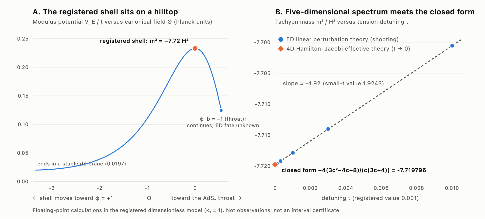
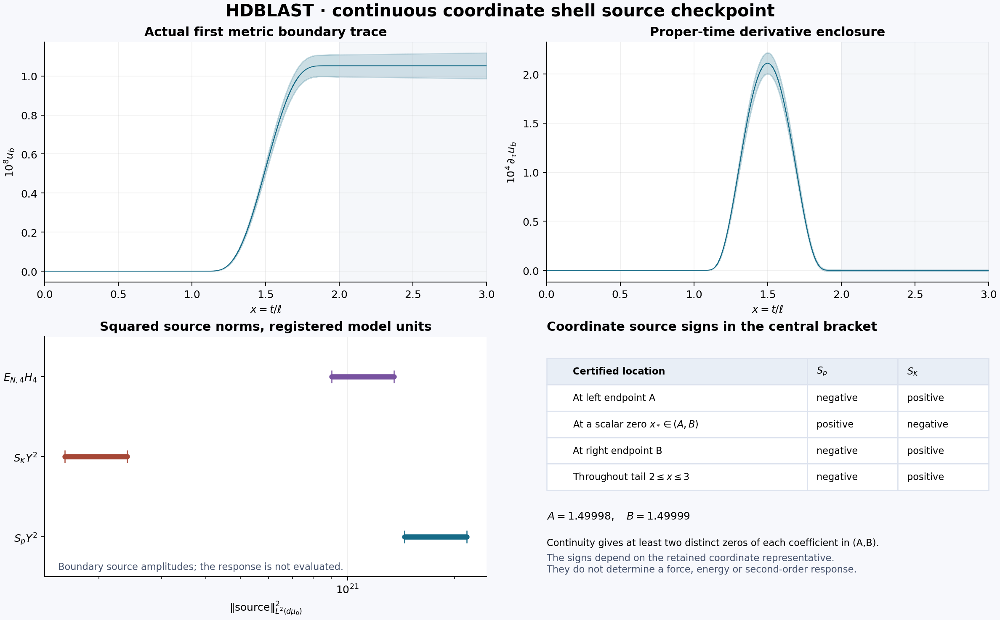
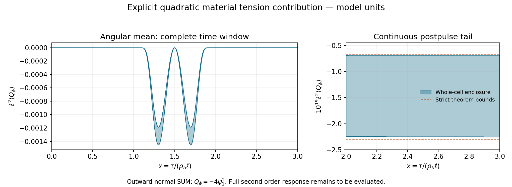
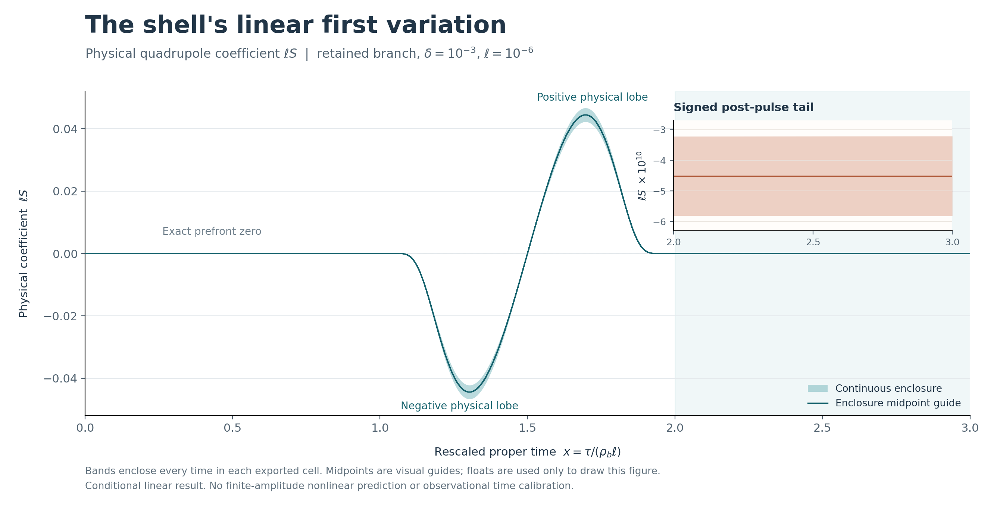
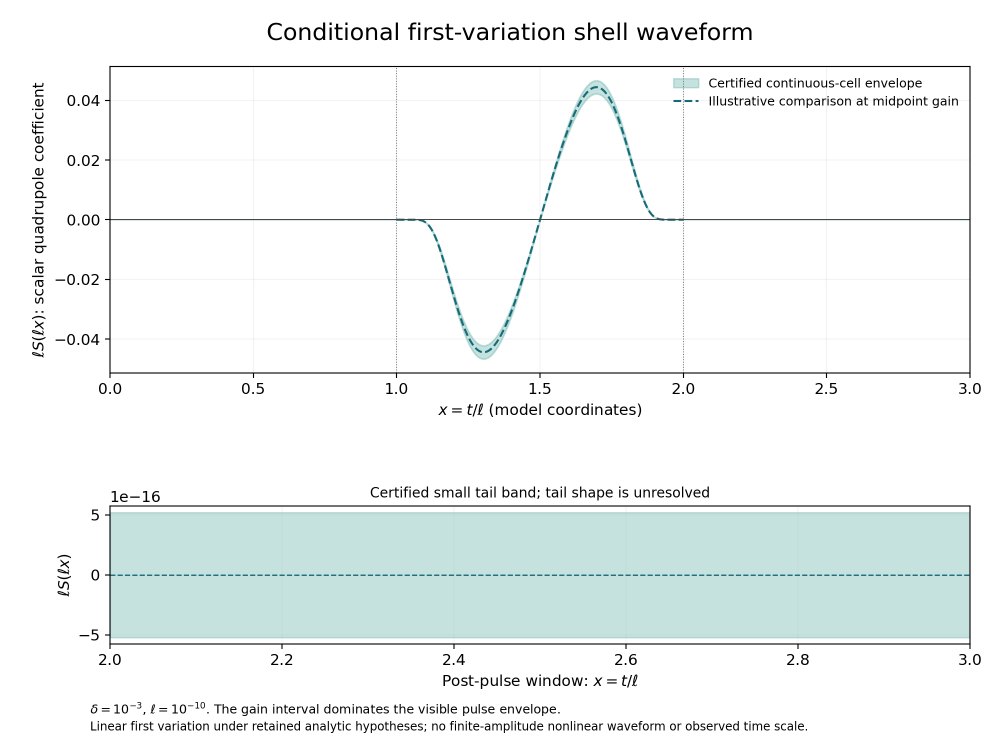
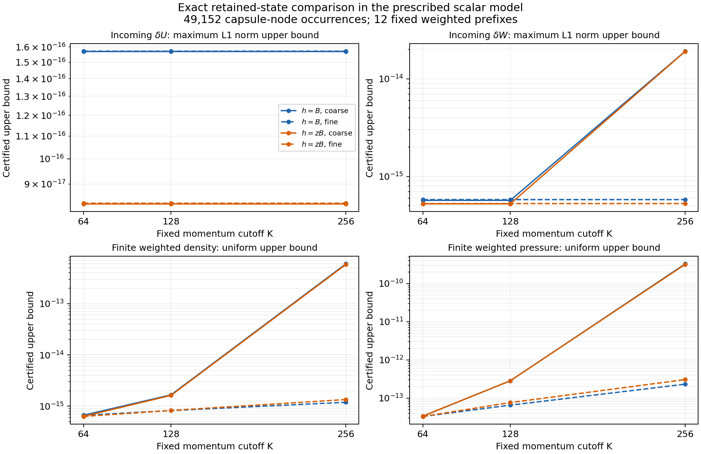
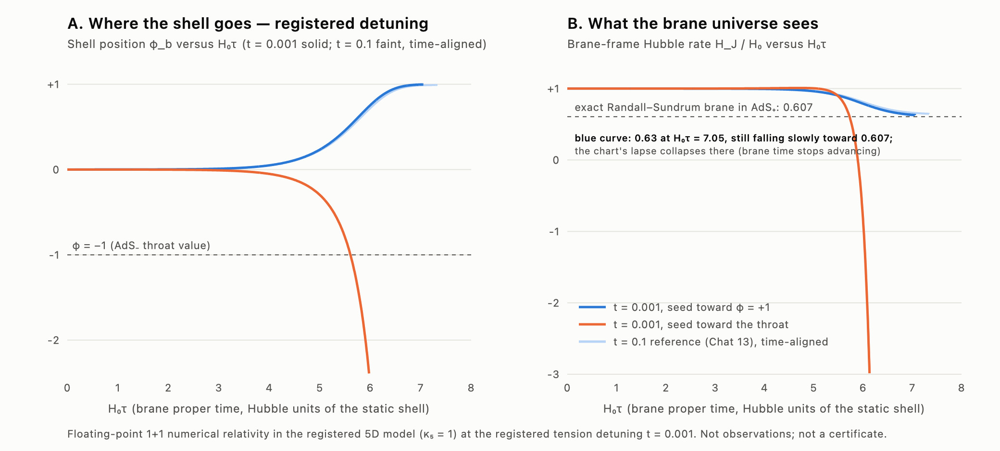

Ricardo Maldonado · programa de investigación independiente · 2025–2026
¿Pudo una “explosión” en una dimensión superior encender nuestro Big Bang?
HDBLAST pregunta si un evento gravitacional violento en una quinta dimensión pudo haber transferido energía a nuestro universo de cuatro dimensiones e iniciado el Big Bang caliente. Las ecuaciones, el código, los resultados, los fracasos y las correcciones son todos públicos.
La idea
Nuestro universo podría comportarse como una delgada membrana (una “brana”) dentro de un espacio más grande de cinco dimensiones, lleno de gravedad y de un campo escalar. Si la membrana está en un equilibrio inestable, como una pelota en la cima de una colina, puede rodar hacia abajo y liberar energía. HDBLAST pregunta si un evento así pudo haber producido el estado caliente y denso donde comienza la historia estándar del Big Bang. La ampliaría, no la reemplazaría.

14 de noviembre de 2026: jets temporales iniciales no lineales y una semilla compatible. La EDP reducida exacta determina J0 hasta J14, con I14≤10^6503000 d(a). Una extensión regularizada por calor reproduce los quince jets, conserva las condiciones mixtas de contorno y la simetría de reflexión, y cumple sup_s X14(semilla)≤10^255 I14. La constante desde el par inicial hasta la semilla es 10^6503255.
Al restringir el mismo parámetro original a |epsilon|≤10^-6507485, la norma de la semilla es como máximo 10^-30. Este intervalo menor es un umbral matemático condicional y conservador. La semilla es un campo auxiliar inicial; la evolución no lineal y la confirmación física siguen abiertas.
Siguiente prioridad: evaluar las constantes reales de energía con coeficientes variables y de recuperación de derivadas normales, y cerrar toda la iteración no lineal en la franja pasada prescrita. La interfaz de regularización de orden quince y el tubo del observador siguen abiertos. Este hito no crea una nueva edición de Zenodo. Las entradas anteriores conservan su alcance fechado.
Demostraciones y reproducción exacta · Extensión compatible por calor · Siguiente cálculo de evolución.
13 de noviembre de 2026: datos de Cauchy no lineales completos con cotas uniformes. En el intervalo original |epsilon|≤10^-6402, las conversiones canónica, física, armónica relativa y de estado en la frontera dan campos H14 y primeras velocidades temporales H13 con norma ≤10^-2200, primera derivada respecto al parámetro ≤10^4200 y segunda derivada ≤B_C=10^10400, bajo las premisas conservadas sobre el fondo y la familia seleccionada.
La demostración conserva el lapso prescrito, la densidad fija, la velocidad inicial no nula y todas las velocidades temporales de las componentes mixtas de la métrica. El hessiano de la velocidad en estados no nulos incluye el tercer diferencial del mapa de estado. El estado inicial permanece en el dominio demostrado, incluidas las copias reflejadas idénticas conservadas. Son cotas matemáticas condicionales y conservadoras; la confirmación física sigue abierta.
Próxima prioridad: cuantificar la jerarquía temporal inicial no lineal y una aproximación inicial compatible en X14, y después la evolución mixta y el dominio del observador. Aquí no se asigna un intervalo de evolución no lineal en todo el dominio temporal prescrito ni un resto observable. No se crea una nueva edición en Zenodo. Las entradas anteriores conservan su alcance histórico.
Demostración del mapa inicial uniforme y reproducción exacta · Cota completa de Cauchy · Próximo cálculo.
13 de noviembre de 2026: familia inicial no lineal con intervalo explícito. Bajo las premisas conservadas sobre el fondo suave y la inversa ponderada seleccionada, el mapa canónico tiene cotas uniformes ||D²F||≤10^1100 y ||D²G||≤10^6100, cubiertas por K=10^6400. La misma familia inicial seleccionada existe para |epsilon|≤10^-6402, con norma de corrección ≤10^-6404, métrica positiva y todos los modos angulares permitidos por la simetría.
La demostración conserva la velocidad inicial no nula, la densidad canónica, todos los términos de materia y los productos ponderados, inversas y determinantes en toda la bola positiva. Este umbral extremadamente conservador no es una amplitud cosmológica medida ni evidencia de un suceso en dimensiones superiores.
Próxima prioridad: cuantificar el mapa completo de datos de Cauchy no lineales y después la evolución en el intervalo prescrito y el dominio del observador. Aquí no se asigna un intervalo de evolución no lineal ni un resto observable. No se crea una nueva edición en Zenodo. Las entradas anteriores se conservan como historial de investigación.
Demostración de la familia inicial y reproducción exacta · Demostración uniforme en la bola positiva · Próximo cálculo.
Inversa de las restricciones iniciales evaluada para todos los modos angulares permitidos por la simetría. La inversa seleccionada en el fondo tiene ahora cotas ponderadas completas de fuente a potencial: dot H12(q,w)→dot H16(q,w) para el bloque escalar con constante 10^5000, dot H12(q,w)→dot H14(q,w) para el bloque de momento con 10^2700, y su suma directa de Hilbert con 10^5000.
La demostración incluye ambos extremos degenerados del anillo y las dos familias vectoriales coexactas. La frecuencia angular se mantiene en el operador principal positivo, con una equivalencia explícita de normas covariantes hasta orden dieciséis. Se conservan los pesos, los espacios invariantes y la inversa seleccionada. Las fuentes usan w^-2; la densidad de momento se divide primero por la densidad fija rho0.
Prioridad actual: una cota uniforme de la segunda derivada del mapa no lineal precondicionado de restricciones en una bola de producto con métrica positiva, seguida de un intervalo admitido para la familia inicial y una región uniforme de evolución y observación. Estas cotas analíticas condicionales no proporcionan una amplitud no nula cuantificada, un resto no lineal, calibración de energía SI ni confirmación física. Este avance no incluye una nueva edición de Zenodo.
Demostraciones y reproducción exacta · Equivalencia covariante completa · Métodos primarios y convenciones.
Derivadas completas del escalar propio, la curvatura y el área en amplitud cero. Las cotas de las ondas controlan ahora las segundas derivadas del escalar observado con tiempo propio y anclaje original, la contracción de Ricci intrínseca completa, la densidad de área, el denominador ponderado y el área total en 0≤q≤25ell/16, con q=-tau/rho_b y ell=10^-6.
Con B2=10^10200000 exp(10^152019), las cotas evaluadas son sup|Phi2|<10^8 B2, sup|R2|<4*10^25 B2 y sup|j2|, sup|D2/D0|, sup|A2/A0|<10^14 B2. La sustracción de Ricci del fondo elimina el segundo movimiento del observador, conservando su primera variación armónica y todos los términos cuadráticos de conexión. La continuación al pasado del mismo estado incluye la reflexión tensorial completa y la velocidad inicial no nula. El núcleo de curvatura conserva el intervalo silencioso de toda la familia ell/4.
Prioridad actual: una región de estados y parámetros de la familia no lineal real, un intervalo de amplitud no nulo y un resto uniforme del observable en tiempo propio. La aplicación de la familia al intervalo pasado más largo y sus premisas analíticas siguen siendo condicionales. Estas cotas en cero no confirman el origen físico, el signo del cambio de área ni una calibración de energía SI. Este avance no incluye una nueva edición de Zenodo.
Demostraciones y reproducción exacta · Curvatura y área completas · Métodos y aplicabilidad.
Evolución de la segunda variación evaluada en la norma mixta X13 completa. La cota de la primera variación proporciona ahora la jerarquía mixta de la fuente y de los datos iniciales de esquina necesaria para el orden trece. Para la segunda derivada de amplitud seleccionada en cero, V2, el problema conservado de fondo con bordes mixtos da sup_t sum_(j=0)^13 ||partial_t^j V2||H^(13-j)<10^10200000 exp(10^152019) en 0≤t≤13/8000000.
La demostración incluye la variación principal y todos los factores dos, las derivadas temporales iniciales no homogéneas, la integral de la fuente evolucionada y sus derivadas radiales normalizadas. Usa palabras genéricas de rotación tensorial, sin transferir la restricción cuadrupolar de la primera variación. La unicidad identifica este segundo jet más regular con la variación C2(X10) conservada; no se afirma que toda la curva no lineal sea C2 en X13.
Prioridad actual: control de la familia real y su región métrica a amplitud finita, y estimaciones compatibles del reloj propio, la inmersión, el área de los cortes, el denominador positivo y el dominio común del observable. Siguen abiertos el resto no lineal y el origen cosmológico. Son cotas matemáticas condicionales sin calibración de energía SI. Este avance no incluye una nueva edición de Zenodo.
Demostración y reproducción exacta · Fuente mixta completa · Métodos y aplicabilidad.
Evolución H14/H13 de la onda de primer orden sobre el fondo, evaluada. La norma de orden alto pendiente en el avance anterior tiene ahora una cota en todo el intervalo de fondo conservado: N14(t)=||V1||H14+||V1,t||H13<10^4000000 exp(10^152017) para 0≤t≤13/8000000. El argumento evalúa los conmutadores temporales y de rotación, las derivadas temporales iniciales y la recuperación radial interior en el fibrado fijo de dieciséis campos, bajo las condiciones homogéneas indicadas en la capa y la pared exterior.
La fuente cuadrática completa tiene ahora la cota espacial uniforme sup_t ||R2[V1]||H12<10^8400000 exp(10^152018). La simetría natural SO(4) conserva el subespacio de Casimir ocho de la onda seleccionada, incluidos los índices tensoriales y la velocidad de calibre. La demostración de orden alto usa todas las palabras de rotación ordenadas, sin un corte angular artificial.
Prioridad actual: cotas de derivadas temporales mixtas de la fuente y datos de esquina iniciales para la segunda onda; después, la región métrica y amplitud de la familia no lineal real y las estimaciones del observable a tiempo propio y área real. Siguen abiertos. Las nuevas cotas son estimaciones condicionales del modelo linealizado, sin calibración de energía SI ni confirmación de un origen cosmológico. Este avance no incluye una nueva edición de Zenodo.
Demostración y reproducción exacta · Simetría natural · Actualización de métodos primarios.
6 de noviembre de 2026: evolución del fondo evaluada y fuente cuadrática con regularidad de Sobolev finita. La conversión inicial mediante la raíz radial y la inversa del flujo tiene ahora cotas H14/H13 en el producto fijo T1<10^5200, T2<10^10000. El nuevo avance evalúa los operadores completos de orden inferior del fondo, incluida la sustitución P=DV−Omega V. Con C=10^150000, sus cotas son l_t≤2C, l_w≤9C, l_0≤40C.
Para la solución lineal conservada con las condiciones homogéneas indicadas en la capa y el borde exterior, G_bg(t,0)<exp(10^150000) en 0≤t≤13/8000000. Por tanto, ||V1||H1+||V1,t||L2<10^5203 exp(10^150000). La fuente cuadrática completa cumple ||F2||H12≤10^240 (10^152000)^2 N14^2, donde N14=||V1||H14+||V1,t||H13, y su valor inicial satisface ||F2(0)||H12<10^315000. Se incluyen el término de variación principal y su factor dos.
Prioridad actual: cotas evolucionadas de conmutadores, recuperación normal y derivadas temporales de la fuente; después, la región métrica de la familia real, el intervalo de amplitud admitido y el resto del observable a tiempo propio y área real. Siguen abiertos. Las cotas condicionales no tienen calibración de energía SI ni confirman un origen cosmológico. Se revisaron ocho artículos primarios para comprobar su aplicabilidad y las revisiones de teoremas; los modelos vecinos de burbujas y branas conservan sus hipótesis distintas.
Demostraciones y reproducción · Literatura reciente y aplicabilidad · Conversión inicial.
6 de noviembre de 2026 UTC: datos iniciales de onda completos, cotas puntuales de coeficientes de la EDP y un propagador condicional de energía. Para la curva canónica ponderada real seleccionada, el lapso afín y el desplazamiento nulo completan los datos iniciales de Cauchy de las ondas de la métrica física y del escalar en calibre armónico relativo hasta la segunda derivada de amplitud en cero. Su norma positiva de fondo sin transformar satisface W2<10^4000; combina valores de campo H14 y velocidades temporales H13. No acota los datos H14 tras la raíz radial no lineal o la inversa del flujo.
Tras el flujo literal de borde con sustracción del fondo, la EDP transformada es cuadrática en las primeras derivadas. En 0≤z≤6ell, |t|≤13ell/8, ||V||_*≤.001, cada derivada mixta respecto de las coordenadas de base y del estado de los coeficientes, hasta orden total 16, tiene suma de valores absolutos de sus entradas <10^150000, con ell=10^-6. Son derivadas puntuales de los coeficientes, no de la solución evolucionada; sigue sin evaluarse una cota de las primeras derivadas de una solución real.
El propagador explícito de energía auxiliar de dieciséis campos conserva el marco angular móvil y los flujos cruzados radiales interiores. Su mayorante condicional es K≤237+(12/5)U_t+(18/5)U_x+36000l_t+18000l_w+135l_0, donde U_t,U_x son cotas de primeras derivadas de la métrica normalizada real y l_t,l_w,l_0 son cotas de los operadores completos transformados de orden inferior. La región métrica física, las trazas cruzadas exactas y las cuatro condiciones de Dirichlet y doce de Neumann homogéneas en la capa deben cumplirse en cada iteración congelada; también se requiere una pared exterior o una condición de soporte demostrada por separado. Siguen abiertos las cotas reales evolucionadas, la fuente cuadrática completa y el cierre de orden alto.
Son cotas analíticas muy conservadoras en la normalización fija del modelo, sin calibración SI. No proporcionan una norma evolucionada, un intervalo no lineal de amplitud, estimaciones del reloj propio o del área real, un resto no lineal finito ni una confirmación del origen físico. Este avance en GitHub no incluye una nueva edición de Zenodo ni un envío a una revista.
Cápsula y guía de reproducción · Completación inicial de Cauchy en calibre armónico · Cota de los coeficientes transformados · Mayorante condicional de energía.
6 de noviembre de 2026 UTC: flujo auxiliar de borde cuantificado y región métrica con energía condicional. El flujo literal en coordenada propia y, con coeficientes congelados en la capa y sustracción del fondo, existe para |z|≤8ell; las normas de los jacobianos de la carta y su inversa son <1.01. Las derivadas mixtas respecto del estado y de la coordenada normal z, hasta orden total 18, son <10^126 en |z|≤6ell, ||u||_*≤.003. Aquí ell=10^-6; el parámetro del flujo auxiliar no es tiempo físico.
La bola interior de estados ||u||_*≤.001 tiene imágenes por el flujo <.00101, que implican la región métrica física completa ||Gamma-J||op<1/40, incluidos los cuatro componentes cruzados radiales. Si esta condición métrica vale en toda la región de coordenadas candidata y las identidades exactas de borde valen para cada iteración congelada, la energía principal auxiliar de los dieciséis campos satisface 1/72000≤e[V]/Q_fixed≤1/2 para Q_fixed no nulo. La rapidez causal radial en coordenadas es <11/10<2, y el flujo de energía en la capa es exactamente cero para las cuatro condiciones de Dirichlet y doce de Neumann homogéneas.
Son resultados de carta, coercividad puntual y rapidez en coordenadas bajo las premisas de fondo conservadas. No proporcionan una cota de los campos evolucionados, un reloj propio, un dominio físico común, un resto no lineal finito ni un descubrimiento del origen físico; todavía debe establecerse que la familia no lineal real permanece en la región métrica.
Cápsula y guía de reproducción · Demostración del flujo literal de borde · Certificado condicional de métrica y energía.
6 de noviembre de 2026 UTC: cotas condicionales del dato inicial completo de segunda variación covariante. Para la nueva elección de pesos especificada, las hipótesis conservadas sobre el inverso ponderado y el fondo dan ||h2||_H14<10^2131 y ||tau2||_H13<10^355, con tau2=pi2/rho0 normalizado por la densidad de volumen fija del fondo. Son segundas derivadas respecto de la amplitud en cero. La norma de Sobolev geométrica completa es ||T||_Hm^2=sum_(j=0)^m integral |nabla_gamma0^j T|_gamma0^2 dvol_gamma0, con derivadas covariantes del fondo y el volumen completo de la esfera 2pi^2.
Las conversiones de datos canónicos a físicos para K2 y Pi2 conservan los términos cuadráticos conocidos del primer campo. Aunque los datos canónicos tienen phi2=varpi2=0, el momento escalar normal físico Pi2 es no nulo. En cada copia del espacio interior, la cota inicial ADM física completa satisface I2=||h2||_H14+||K2||_H13+||phi2||_H14+||Pi2||_H13<10^2132.
Los nuevos pesos especificados conservan el primer paquete real y la prescripción afín del escalar y de su densidad de momento; los pesos históricos siguen sin recuperarse. Estas cotas superiores extremadamente conservadoras usan la normalización fija del modelo, sin calibración al SI, y no estiman un tamaño medido. Siguen abiertos el control uniforme de amplitud, una evolución no lineal común, las cotas de los campos evolucionados y el resto cuadrupolar a amplitud finita.
Cápsula y guía de reproducción · Dato físico completo de segunda variación de Cauchy · Referencias.
6 de noviembre de 2026 UTC: correcciones iniciales ponderadas cuantificadas, bajo las hipótesis analíticas conservadas. Para los grados armónicos escalares reales 0,2,4 de la fuente cuadrática de las restricciones, tensores de comparación explícitos de soporte compacto y la propiedad de energía mínima de la corrección elegida dan N(h2)<2.5e40 y N(tau2)<2e17 para una elección nueva de pesos especificada. Aquí tau2=pi2/rho0, con densidad de volumen de fondo fija rho0, y N(T)^2=integral rho^3 |dy| <|T|^2_gamma0>_S3,prob usa la medida de probabilidad redonda en la esfera.
Son segundas derivadas iniciales respecto de la amplitud en cero, normalizadas al modelo; el teorema de datos iniciales exactos y de dominio ponderado y la rama de fondo siguen siendo premisas. La nueva elección conserva el primer paquete real y la prescripción afín del escalar y de su densidad de momento; no identifica los pesos históricos sin especificar. Siguen abiertas las cotas cuantitativas H14/H13, la evolución de los segundos campos, un cilindro objetivo no lineal común y un radio de amplitud finita.
Cápsula y guía de reproducción · Cota inicial de la métrica · Referencias.
5 de noviembre de 2026 (Los Ángeles; 6 de noviembre UTC): fuente de curvatura escalar evaluada y una prueba condicional de compensación. En e=0 para la amplitud afín registrada fija, en 0≤q≤T=25ell/16, con q=-tau/rho_b definido por tiempo propio y ell=10^-6, el primer coeficiente escalar físico real cumple |S|<51500 y |S_q|<3.107e12. El subíndice 2 indica la segunda derivada de amplitud, el doble del coeficiente de Taylor de e^2; son coeficientes normalizados del modelo sin calibración al SI.
En T, la integral de la fuente conocida de curvatura escalar cumple I_R>1.17e9, con una contribución particular de datos nulos <-1.17e9 a la segunda derivada ponderada del logaritmo del área relativa. El denominador completo cumple D2/D0=K_D-I_R-I_Z. Aquí I_Z es la integral de Green ponderada de la combinación pendiente Z=rho_b^2 P'_b <psi2>_w-<electricWeyl2>_w, con peso fijo <f>_w=<Y^2 f>/<Y^2>. Ambos segundos campos incluyen las variaciones completas del evento físico, la capa, los observadores, la normal y la tangente al llevarlos a los cortes.
Solo si además D2(T)≥0, la compensación exigiría Zmax=sup|Z|>1.35e21. El Zmax real, la compensación y el signo total de la segunda derivada del área siguen sin determinarse. Un área física positiva D_e>0 no exige D2≥0; un D2 negativo es compatible con un área positiva para amplitudes suficientemente pequeñas. No se obtiene un resto a amplitud finita, un radio efectivo de amplitud, energía física, fuerza, enfoque neto ni un origen del Big Bang.
Se supone que la familia completa y el mapa original de observadores gaussianos a tiempo propio existen en un cilindro objetivo común hasta T, conservando el anclaje físico, las etiquetas y las hipótesis del campo, unión, reconstrucción, restricciones, gauge y unicidad. El dominio de coordenadas hasta 3ell/2 de la vinculación registrada no basta por sí solo. La demostración lineal de primer orden conservada cubre 3ell; no demuestra el cilindro no lineal. Este avance de trabajo en GitHub no incluye una nueva edición de Zenodo ni un envío a revista. Cápsula y guía de reproducción · Cota de la fuente de curvatura · Referencias.
5 de noviembre de 2026 (Los Ángeles; 6 de noviembre UTC): fuentes cuadráticas conocidas del área a tiempo propio, evaluadas. Para la amplitud afín registrada e, en e=0 y en todo 0≤q≤25ell/16, con q=-tau/rho_b definido por tiempo propio y ell=10^-6, este cálculo condicional evalúa las contribuciones cuadráticas del primer campo a la densidad de área y los cuadrados de la expansión y de la cizalla. Conserva el anclaje físico fijo, las etiquetas transportadas y las hipótesis de rama, desarrollos suaves, reconstrucción, gauge, unicidad y dominio de observadores. El subíndice 2 indica la segunda derivada de amplitud, el doble del coeficiente de Taylor de e^2.
Para el denominador normalizado con peso fijo <f>_w=<Y^2 f>/<Y^2>, la descomposición exacta es D2/D0=K_D+<L2_R>_w, donde la suma conocida cumple -3.65e-16<K_D<5.357e-16. La transferencia restante contiene la derivada de curvatura intrínseca completa R2 llevada a los cortes, incluidas las variaciones del campo, el encaje, el reloj y los observadores. Si una cota futura proporciona Cr≥sup_{0≤q≤25ell/16}|<R2(q)>_w|, entonces |<L2_R>_w|≤8.614e-13 Cr. Cr sigue sin evaluarse; la transferencia usa solo el intervalo de quietud no lineal completo conservado hasta ell/4.
Esto no acota el D2 total, el resto no lineal completo ni un radio efectivo de amplitud. Los signos de los términos conocidos no establecen enfoque neto, una fuerza física ni un origen del Big Bang. Este avance de trabajo en GitHub no incluye una nueva edición de Zenodo ni un envío a revista. Cápsula de investigación · Cota cuadrática del área · Referencias.
5 de noviembre de 2026 (Los Ángeles; 6 de noviembre UTC): cotas evaluadas de primer orden para la métrica y el área de los cortes a tiempo propio. Para la amplitud afín registrada e, en e=0 y en todo 0≤q≤25ell/16, con q=-tau/rho_b definido por tiempo propio y ell=10^-6, la métrica física normalizada de los cortes cumple sup||G'_0||op<2.4e-8 y la densidad relativa de área real cumple sup|j'_0|<3.5e-8. Aquí G_0=Id, j_0=1 y las normas de operador usan marcos ortonormales del fondo. Estas derivadas primeras evaluadas conservan las hipótesis del campo maestro, fondo, reconstrucción, gauge y unicidad.
El cálculo incluye los términos del reloj propio y del transporte angular de los observadores al llevar la métrica a sus cortes. Los campos, el anclaje físico original y las etiquetas transportadas se transforman conjuntamente por gauge; por ello estos primeros coeficientes físicos no requieren resolver numéricamente la ecuación de onda del gauge. Se usan la traza futura real del campo maestro conservada y la transferencia pasada del mismo estado, sin una nueva ejecución de las EDP. Las componentes de coordenadas longitudinales t1,n1 no son cotas del reloj armónico U1 ni desplazamientos de tiempo físico calibrados.
Vía condicional más allá de la primera derivada: si después se establece una cota uniforme de la segunda derivada de la métrica de los cortes Q(a)=sup_{|e|≤a}||G''_e||op en este mismo cilindro de tiempo propio, la fórmula de Taylor da sup_{|e|≤a}||G_e-Id||op ≤ a P0+a^2 Q(a)/2, con P0=sup||G'_0||op<2.4e-8. Este avance no proporciona Q(a), una cota uniforme en toda la caja de parámetros no lineales, un radio efectivo de amplitud, un resto a amplitud finita ni el cero central durante la interacción.
No confirma un origen del Big Bang. Este avance de trabajo en GitHub no incluye una nueva edición de Zenodo ni un envío a revista. Cápsula de investigación · Cota de los primeros cortes a tiempo propio · Referencias.
5 de noviembre de 2026 (Los Ángeles): un intervalo exacto de quietud bajo hipótesis y cotas de observadores desde su extremo. Conservando las hipótesis de existencia, propagación finita y unicidad para las EDP no lineales completas, la cota de velocidad radial real c_*=2, el gauge completo y la unión física fija de la capa, el cuadrupolo con área real de la familia exacta elegida cumple M_e(-rho_b q)=0 en el intervalo cerrado 0≤q≤ell/4, donde q=-tau/rho_b y ell=10^-6. Todo el estado de los observadores es independiente de la amplitud allí. Su continuación parte de ese extremo con variaciones de amplitud de primer y segundo orden nulas, conservando el anclaje físico, las etiquetas transportadas y el origen del tiempo propio.
La duración activa en q se reduce de 25ell/16 a 21ell/16. Con cotas idénticas de los coeficientes, el mayorante suficiente de V mejora por un factor como máximo de 21/25; los términos H, C y P2 del mayorante de W mejoran por factores como máximo de 9261/15625, 441/625 y 21/25. La condición suficiente de deriva del reloj pasa de c<1/50 a c<1/42. Los coeficientes posteriores al intervalo y un radio efectivo de amplitud siguen sin evaluarse.
Este cero temprano protegido no establece el cero central posterior durante la interacción. El argumento aplica las hipótesis no lineales conservadas sin volver a verificarlas y no confirma un origen del Big Bang. Este avance de trabajo en GitHub no incluye una nueva edición de Zenodo ni un envío a revista. Cápsula de investigación · Intervalo exacto de quietud y cotas desde su extremo · Referencias.
5 de noviembre de 2026 (Los Ángeles): criterios condicionales para el dominio de observadores. Este avance da criterios suficientes para un dominio común de observadores en un cilindro finito de tiempo propio. Si existe el flujo geodésico normal parametrizado por tiempo propio, sus cortes tienen métricas positivas y la dirección temporal de referencia es de tipo tiempo y apunta al futuro, la ortogonalidad de Gauss hace estrictamente monótono el reloj de los cortes representados como gráficas. Esto impide cruces del mapa candidato en todo el cilindro. La identificación física de la capa debe ser además un encaje.
Estimaciones independientes mediante cuerdas en el espacio ambiente dan un criterio cuantitativo de encaje global. Una continuación de EDO por primera salida parte de cotas de los coeficientes en un entorno regular fijo y, con su condición de no salida, obtiene el intervalo candidato antes de usar estimaciones de variación de parámetros. Las condiciones racionales b,eta≤1/8 y c<1/50 son hipótesis suficientes que aún deben validarse para el modelo.
El horizonte indicado cubre solo el intervalo central amplio de ceros conservado, sin alcanzar el cero lineal posterior ni la cola. Siguen sin evaluarse las constantes de las EDP y un radio efectivo de amplitud. Estos métodos geométricos y de EDO establecidos no aportan un nuevo teorema de existencia de las ecuaciones de campo, radiación ni una prueba del origen del Big Bang. Este avance de trabajo en GitHub no incluye una nueva edición de Zenodo ni un envío a revista. Cápsula y reproducción · Criterio de encaje · Reloj de observadores normales · Continuación del flujo.
5 de noviembre de 2026 (Los Ángeles): cotas condicionales para el observable no lineal. Este avance de trabajo precisa qué debe acotarse para certificar una respuesta no lineal de amplitud finita de la capa. Sigue el momento cuadrupolar a tiempo propio real fijo, con el escalar completo llevado a los cortes y el área real, en cortes comunes de observadores sin cruces.
Los métodos establecidos de determinantes, EDO dependientes de parámetros y Taylor proporcionan cotas condicionales de la métrica, el flujo de observadores y el error. El coeficiente 5/4 del determinante es óptimo; la cota correlacionada del momento normalizado es suficiente, sin afirmar constantes óptimas del momento. Un resto de la familia impar conserva la cancelación exacta A_e=eSY para cualquier densidad de área positiva. Un ejemplo con término cruzado escalar–área no nulo muestra por qué no pueden descartarse los términos proyectados por separado. La imparidad y la regularidad C2 por sí solas no dan un resto cúbico.
La familia elegida, la regularidad y el dominio común de observadores siguen siendo hipótesis. Se incluyen las variaciones del reloj, la inmersión y las etiquetas transportadas, pero las constantes no lineales y una ventana efectiva de amplitud siguen sin evaluarse. No se aporta un nuevo teorema de existencia para EDP, una selección de fuente física, radiación ni una prueba del origen del Big Bang. Este avance de trabajo en GitHub no incluye una nueva edición de Zenodo ni un envío a revista. Cápsula y reproducción · Cota de métrica y área · Resto de la familia impar · Cotas del flujo de observadores.
4 de noviembre de 2026 (Los Ángeles): cotas características para la respuesta escalar pasada de una capa temporal. Para el mismo paquete lineal registrado, con ell=10^-6 y magnitudes iguales del tiempo propio, un argumento característico con datos iniciales solo de velocidad da |S(-t)-S(t)|<1/40=.025 en 0≤t≤3ell y <1/40000=.000025 en 1.96ell≤t≤3ell. Son diferencias absolutas de primeros coeficientes escalares físicos en unidades del modelo; estas cotas no limitan cada amplitud individual.
Los certificados futuros del campo real acoplado, conservados como premisas, permiten obtener al menos un cero pasado de la amplitud en cada intervalo (-1.49999ell,-1.49998ell) y (-1.97ell,-1.96ell), además de la cola continua -1/1500<S(-t)<-1/4000 para 2ell≤t≤3ell. El signo de la cola corresponde al coeficiente S, no a un campo angular globalmente negativo. No se afirma unicidad ni un número total de ceros. Una estimación separada de norma, que conserva el término cruzado, da 6.06e11<C_minus<7.44e11 para la norma escalar cuadrática del primer campo pasado. No es energía física ni una ley de respuesta no lineal de amplitud finita.
La demostración conserva la masa y el resorte de frontera y toda la historia de la fuente, y cita los métodos característicos y de núcleo establecidos. Se mantienen como premisas los certificados anteriores de la forma de onda real; no se vuelve a ejecutar su campaña. No se aporta una nueva resolución numérica de la EDP, un oráculo de campo/fuente/perfil, una ventana no lineal efectiva, un mecanismo de radiación ni un origen cosmológico. Se conservan las construcciones anteriores de familias no lineales bajo hipótesis y sus resultados cualitativos de signo para cada familia. Cápsula y reproducción · Demostración principal · Nota de trabajo · Fuente TeX. Preparado para revisión del autor y especialistas; este avance en GitHub no incluye una nueva edición de Zenodo.
4 de noviembre de 2026 (Los Ángeles): una comparación escalar entre pasado y futuro y un intervalo más estrecho para un cero pasado. Para el mismo primer estado registrado y la misma normalización de la capa, con ell=10^-6, el primer coeficiente escalar físico satisface sup_(0≤t≤3ell)|S(-t)-S(t)|<B=264000000001/13738809600<20 en unidades del modelo. Se comparan magnitudes iguales del tiempo propio de la capa. Es una cota de la diferencia absoluta; no se afirma que ninguna de las dos amplitudes individuales sea menor que 20.
El certificado anterior de la forma de onda futura para el mismo estado, conservado como premisa, permite obtener S(-5ell/4)<-37376 y S(-7ell/4)>37379, que primero proporcionan un cero pasado en el intervalo amplio (-7ell/4,-5ell/4). Las cotas conservadas de celdas completas del CSV permiten después ubicar al menos un cero en (-6145ell/4096,-6143ell/4096), de anchura ell/2048: una reducción de la anchura por un factor de 1024 respecto a aquel intervalo pasado amplio de longitud ell/2. No se demuestra unicidad ni que el intervalo sea óptimo. No se transfieren los intervalos futuros más estrechos del certificado original ni los signos de su cola pequeña. Aquel certificado y su CSV se conservan como premisas; no se vuelve a ejecutar la campaña anterior. La reflexión temporal y las estimaciones en norma de grafo son métodos establecidos, que la demostración cita.
La comparación trata de un primer coeficiente lineal: no proporciona una garantía de error relativo, una cota de amplitud no lineal finita, una ley de energía física, un resultado de radiación ni un origen cosmológico. Ya existe un coeficiente de Taylor futuro completo de segundo orden bajo hipótesis explícitas; siguen siendo tareas distintas una solución particular pasada con cotas cuantitativas y un defecto no lineal controlado. Cápsula y reproducción · Demostración principal · Nota de trabajo · Fuente TeX. La nota se prepara para revisión del autor y de especialistas. Este avance en GitHub no incluye una nueva edición de Zenodo.
4 de noviembre de 2026 (Los Ángeles): una cota puntual de la traza escalar a través del contacto pasado con la capa. Para el primer paquete registrado, el coeficiente escalar físico de primer orden sobre la capa es Phi_1=S(t)(n1^2-n2^2), con sup|S|<2,5×108 en todo -3≤x≤0, donde x=t/ell y ell=10^-6. El cuadrupolo tiene media angular nula. Es una cota amplia de un coeficiente lineal en unidades fijas del modelo, no una amplitud observada ni una cota de una perturbación no lineal finita.
La ley dinámica real de la capa conserva tanto la masa como el resorte de frontera. Su energía matemática positiva satisface (1-63ell^2/4400)E(0)≤E(x)≤E(0) en este intervalo pasado. Una estimación superior en la norma de grafo del operador proporciona la derivada normal puntual necesaria para la traza escalar física. El operador, el espacio de Hilbert con masa en el extremo y los argumentos de activación cualitativa siguen métodos establecidos, que se citan en la demostración.
La energía usada para estimar no se identifica con energía física inyectada ni de Noether. Siguen sin resolverse un estado compatible de segundo orden, la preparación pasada no lineal, una ley física de fuente entrante, la producción de radiación y el origen cosmológico. Cápsula y reproducción · Demostración principal · Borrador de trabajo · Fuente TeX. El artículo sigue siendo un borrador para revisión del autor y de especialistas. Este avance en GitHub no incluye una nueva edición de Zenodo.
5 de noviembre de 2026: un precursor característico local de primer orden. Bajo las hipótesis conservadas del fondo y de la reconstrucción lineal, ambas direcciones principales normalizadas mantienen fracciones mayores que 0,499999 en -1<x≤0, antes de un posible contacto pasado con la capa. Son diagnósticos de la variable maestra, no energía física ni flujo de radiación.
Dos trazas compatibles sobre las caras características pasadas reproducen el primer paquete presente registrado en un diamante local. Su esquina común en el punto interior del espacio-tiempo (x,r)=(-1/2,3/2) tiene valor < -4e-8, mientras que el punto medio de cada cara tiene valor > 0,499999. Cada traza tiene, por tanto, un cero interior y no es constante.
Es un resultado condicionado de primer orden lineal. No completa las restricciones de segundo orden ni una preparación no lineal, no selecciona una ley física entrante, no produce radiación ni establece un origen cosmológico. Cápsula y reproducción · Demostración principal · Documento de trabajo · Fuente TeX. Este avance en GitHub no incluye una nueva edición de Zenodo.
4 de noviembre de 2026: restricciones del estado entrante y un balance continuo de fuentes. El paquete presente registrado contiene ambas direcciones principales de su variable maestra normalizada. Sus pesos cuadráticos casi iguales no son flujos físicos de energía. Un estado entrante pasado podría haber generado estos datos presentes mixtos mediante dispersión; esa historia aún debe construirse.
Cinco celdas continuas recortadas exactamente cubren un área activa de 9/32 y dan una integral futura del cuadrado de la fuente en el volumen no mayor que 8,52642 × 1024; la cota correspondiente sobre la capa es 3,708321 × 1012, en unidades del modelo. La energía matemática forzada está acotada por 44 veces la suma de una energía inicial compatible y el balance de fuentes calculado. La energía inicial no puede fijarse simplemente en cero: los datos iniciales absolutos de segundo orden deben satisfacer las restricciones cuadráticas. Esta estimación de la traza sigue siendo menos ajustada que la cota anterior de Duhamel y no mejora ninguna predicción observable ni aporta un nuevo signo del volumen propio.
Una restricción parcial sobre una superficie nula, con una traza escalar de segundo orden fijada explícitamente en cero y datos de esquina declarados, exige una corrección geométrica cuando sus términos cuadráticos de primer orden tienen integral no nula. Resuelve una restricción de traza, no el problema pasado completo. Una inversa causal estable de la historia escalar normalizada se aplica solo sobre la imagen admisible conservada y al tramo inicial que alcanza esa historia; no abarca historias arbitrarias ni preparaciones exteriores.
Demostración, cotas de las fuentes y comprobaciones reproducibles · Documento de trabajo para revisión. Las cotas continuas de fuentes y operadores y el desarrollo analítico siguen siendo supuestos condicionales; la aritmética exacta no vuelve a demostrar la EDP. La tensión pura dependiente del escalar intercambia energía de vacío, no radiación. Siguen sin establecerse un sector de materia y su estado, una escala física, un intervalo no lineal uniforme del parámetro y un origen en una dimensión superior.
4 de noviembre de 2026: cotas de la respuesta en tiempo propio a partir de una cota integrada de preparación. Una estimación matemática directa de energía con término cruzado conserva los cinco canales medios acoplados. Bajo los supuestos analíticos conservados, toda preparación media compacta admitida cuya diferencia completa del perfil inicial de áreas de niveles escalares tiene norma H1 no mayor que 2 × 1031 tiene coeficientes completos de segundo orden negativos para el volumen propio y la expansión en un único tiempo propio anclado. El cuadrado de la norma es la integral del cuadrado del perfil y del cuadrado de su derivada respecto de una etiqueta calibrada por el fondo. Por tanto, cada familia exacta fija admitida tiene un volumen positivo menor y una expansión positiva más lenta que el fondo para parámetros no nulos de cualquiera de los dos signos y suficientemente pequeños.
La imagen de preparaciones admisibles contiene sucesiones con norma H1 acotada y derivadas puntuales respecto de la etiqueta arbitrariamente grandes; esta vía evita así el criterio puntual anterior. No se afirma que una de las dos bolas normadas especificadas contenga a la otra. Las cotas continuas de los operadores y el desarrollo analítico siguen siendo supuestos condicionales; la aritmética exacta no vuelve a demostrar esos supuestos ni la EDP. Esta energía usada para estimar no es una ley física de energía de Noether.
Demostración, cotas exactas, ejemplo en la imagen de preparaciones y comprobaciones reproducibles · Documento de trabajo para revisión. La clase y su radio aún carecen de una regla física de selección. No se establece un intervalo no lineal común del parámetro, producción de radiación, calibración en unidades del SI ni un origen del Big Bang en una dimensión superior.
4 de noviembre de 2026: respuestas robustas de la brana dentro de una clase geométrica de preparación especificada. En una sección de Cauchy inicial físicamente especificada, las áreas de las esferas tridimensionales de nivel del campo escalar y su derivada respecto de una etiqueta fijada por el fondo definen una clase restringida con R_A ≤ 2 × 1033. Bajo los supuestos analíticos y del fondo conservados, todas las preparaciones admitidas tienen coeficientes de segundo orden negativos para el volumen y la expansión en un único tiempo propio anclado. Por tanto, cada familia exacta admitida tiene volumen positivo y expansión positiva, ambos inferiores a sus valores de fondo, para parámetros no nulos de cualquiera de los dos signos y suficientemente pequeños. El ejemplo anterior con signos opuestos queda fuera de esta clase; su resultado fechado se conserva.
Reconstrucción geométrica, supuestos, cotas exactas y comprobaciones reproducibles · Documento de trabajo para revisión. La sección física, los sectores canónicos restringidos y el radio de la clase aún necesitan una regla de preparación. Las cotas de los coeficientes no proporcionan un intervalo no lineal de amplitud uniforme en toda la clase. Estos resultados en unidades del modelo no establecen producción de radiación ni un origen del Big Bang en una dimensión superior.
4 de noviembre de 2026: la respuesta de la brana depende de su preparación. Dos preparaciones compactas de segundo orden, con el mismo paquete de primer orden y las mismas ecuaciones de restricción, tienen signos opuestos certificados de las variaciones del volumen y de su tasa de expansión en un único tiempo propio anclado. Ambas mantienen una expansión positiva para perturbaciones suficientemente pequeñas. El resultado anterior se conserva para sus datos elegidos; el primer paquete y las restricciones por sí solos no seleccionan los signos.
Teorema, supuestos, dos métodos comprobados y cálculos reproducibles · Documento de trabajo para revisión. Un modelo físico debe seleccionar la preparación de segundo orden o demostrar robustez en una clase justificada. La amplitud utilizable sigue sin calcularse; estos resultados en unidades del modelo no establecen producción de radiación ni un origen del Big Bang en una dimensión superior. Este avance no incluye una nueva edición de Zenodo ni un envío a una revista.
1 de noviembre de 2026: volumen en tiempo propio de la brana con datos preparados. Para nuevos datos medios iniciales compactos elegidos explícitamente, las cotas condicionales dan un volumen positivo de la brana y una tasa de expansión positiva, ambos inferiores a los valores de fondo, en un único tiempo propio registrado y para perturbaciones no nulas de cualquier signo suficientemente pequeñas. Es una completación no lineal distinta de la familia anterior definida solo mediante pesos, cuyos datos medios no se habían especificado numéricamente. La preparación es una elección matemática; el resultado no selecciona un generador físico ni establece una historia temporal con signo certificado.
Enunciado, preparación, supuestos y cálculos reproducibles · Documento de trabajo para revisión. El intervalo utilizable de amplitud sigue sin calcularse y todas las cantidades usan unidades del modelo sin calibración SI. Estos resultados no establecen producción de radiación, una señal observable ni un origen del Big Bang en una dimensión superior. Este avance no incluye una nueva edición de Zenodo ni un envío a una revista.
1 de noviembre de 2026: geometría intrínseca de la brana y la media escalar pendiente. Nuevas cotas racionales continuas dan correcciones positivas de segundo orden a la curvatura espacial promedio y al término de varianza de expansión y cizallamiento del modelo condicional. Cuantifican una corrección necesaria al relacionar el volumen de la brana con su curvatura espacial. La historia completa del volumen todavía requiere una media escalar de segundo orden desconocida; estos resultados no establecen creación de radiación ni un origen del Big Bang en una dimensión superior.
Derivación, supuestos, datos y cálculos reproducibles. El resultado anterior para observadores con tiempo propio en el espacio de cinco dimensiones es un cálculo de curvatura distinto. Los números usan unidades del modelo, sin calibración en unidades físicas ni un intervalo efectivo de amplitud de perturbación. Este avance no incluye una nueva edición de Zenodo ni un envío a una revista.
26 de octubre de 2026: curvatura magnética de pantalla en las coordenadas registradas, bajo condiciones. Sobre la esfera angular exterior en (x,r)=(1/4,5/4), antes del contacto con la capa, la proyección de la segunda derivada respecto del parámetro del tensor magnético de pantalla sobre el par TT seleccionado es Π_pair H″(0)=h(T+ − T−). El cálculo combina el término TT lineal de la segunda respuesta con el término cuadrático escalar completo y conserva las correcciones del observador, de la normal radial, de la conexión y del tensor epsilon. La primera variación completa de este tensor de pantalla se anula, y las identidades angulares exactas cierran el término cuadrático en T+ − T−.
El coeficiente h está encerrado en [-0.024929793753, -0.004128493946] y es estrictamente negativo bajo los supuestos conservados. Su contribución cuadrática escalar está encerrada en [-0.000000000000000000690462, 0.000000000000000001996501]. Son cotas racionales redondeadas hacia afuera en el punto registrado. El campo angular proyectado se anula en los dos círculos máximos registrados S=0 y S=1, donde S=n0²+n1². El observador futuro es la normal unitaria a t=constante; la normal radial es la normal unitaria positiva a y=constante dentro de esa sección espacial, con los ejes y la orientación de la pantalla fijados por el registro.
Es un diagnóstico condicional de curvatura para la respuesta formal en las coordenadas registradas. Se conservan los supuestos anteriores sobre el fondo, la variable maestra, el gauge, la existencia de los coeficientes y el sistema subsidiario. No se ha construido un anclaje del observador o del reloj que sea invariante de gauge. El resultado no establece radiación, fuerza ni detección físicas, una familia no lineal de amplitud finita ni un origen cosmológico. El problema completo de contorno de Einstein–materia a segundo orden sigue sin resolverse. Esta actualización no incluye una nueva versión de Zenodo ni un envío a una revista.
26 de octubre de 2026: cotas para las derivadas tensoriales en un punto exterior. Bajo los supuestos conservados del modelo, se encierran el coeficiente tensorial de la respuesta formal total real y todas sus primeras y segundas derivadas respecto de las coordenadas escaladas en (x,r)=(1/4,5/4), antes del contacto con la capa. Los dos coeficientes TT siguen siendo iguales.
Su valor común u queda en [−0.000207982516, −0.000010433243], y su derivada temporal escalada u_x en [−0.000280539069, −0.000046459086]. Ambos son estrictamente negativos. Los intervalos de la primera derivada radial y de las tres segundas derivadas contienen cero, por lo que no se determina el signo de esas derivadas.
Es un resultado local sobre coeficientes métricos en el gauge registrado. No establece una aproximación C2 en todo el dominio, una cota del residuo de Einstein ni un observable físico de curvatura o de ondas gravitacionales. La realización física no lineal y el origen cosmológico siguen abiertos. Esta actualización no incluye una nueva versión de Zenodo ni un envío a una revista.
26 de octubre de 2026: una aproximación de la respuesta angular completa cumple su objetivo de precisión. Una aproximación C1 continua con la primera realimentación en el dominio local D+ conservado mantiene las 23 componentes angulares. Su cota condicional completa del error X para valores y primeras derivadas escaladas x/r es inferior a 1.1787044291e28, dentro del objetivo 1e29 en la norma angular H positiva.
En el punto exterior (x,r)=(1/4,5/4), un cálculo específico adicional de la respuesta total real encierra cada uno de los dos coeficientes TT iguales en [−0.001311761536, −0.000001509027]. Es un coeficiente métrico en el gauge registrado, no una onda gravitacional observada ni un observable tensorial invariante de gauge.
Estos certificados numéricos de aproximación y defecto integral conservan los supuestos condicionales anteriores sobre la existencia de los coeficientes y el sistema subsidiario. No establecen un residuo puntual C2 de Einstein, una familia física no lineal o de amplitud finita, ni un origen cosmológico. Esta actualización no incluye una nueva versión de Zenodo ni un envío a una revista.
Cotas condicionales para los signos en la membrana y el volumen anclado — 25 de octubre de 2026. Las cotas condicionales sitúan N0(x,0) y J0(x,0) por debajo de cero en los tiempos escalados x=9/8 y x=5/4 del modelo. Bajo los supuestos de proyección conservados del cálculo anterior y una completación cinemática suave, la segunda derivada respecto al parámetro del volumen con tiempo propio anclado también es negativa en x=9/8. Siguen sin establecerse un cambio de volumen a amplitud finita, una solución de Einstein con todos los sectores angulares y conclusiones cosmológicas. Esta actualización no incluye una nueva versión de Zenodo ni un envío a una revista.
25 de octubre de 2026: una aproximación de las cinco medias acopladas cumple su objetivo de precisión. Una aproximación C1 definida de forma continua incluye ahora la primera realimentación acoplada del volumen y el término de contorno de la membrana. Su cota condicional completa de error es inferior a 1.6090323e28 en la norma X escalada del modelo, dentro del objetivo 1e29. Las mallas 64 y 128 dieron cotas insuficientes; el límite declarado de 256 sí cumplió el objetivo. Ambos modos de ejecución coinciden y una integración exacta independiente reproduce las muestras de realimentación guardadas.
Esto hace avanzar el cálculo numérico de cinco coeficientes medios. Siguen abiertos el espacio-tiempo completo de segundo orden con todos los sectores angulares, el signo del observable intrínseco, una familia no lineal y el origen físico. Son cotas matemáticas bajo los supuestos del modelo, no mediciones físicas. Esta actualización no incluye una nueva versión de Zenodo ni un envío a una revista.
Derivación y alcance · Datos, código y reproducción · Archivo fuente (ZIP)
23 de octubre de 2026: se cumple el objetivo de precisión de los datos iniciales. Una comparación exacta del residuo reduce a 9.505e-18 el radio del intervalo de beta de la misma rama regular retenida. Una nueva aproximación racional, registrada por separado y centrada en esa rama, tiene una cota certificada de error inicial y de onda libre inferior a 8.519e27, dentro del objetivo 1e28 en las 96 celdas. Se conservan la aproximación anterior y su cota insuficiente. Se superan algunas asignaciones ilustrativas por componente; la desigualdad combinada exacta sí se cumple.
Esto resuelve una limitación de precisión inicial bajo los supuestos del modelo y del teorema. La respuesta numérica total evolucionada y el signo del observable intrínseco siguen sin evaluarse. No establece una familia física no lineal ni un origen del Big Bang en dimensiones superiores. Esta actualización no incluye una nueva versión de Zenodo ni un envío a una revista.
Nota técnica (PDF) · Derivaciones, fuentes y verificaciones · Archivo fuente (ZIP).
23 de octubre de 2026: mejores cotas de respuesta y una definición del volumen intrínseco de la capa. Una estimación que usa la región inicial exactamente nula mejora la cota condicional de contracción local a q = 0.000426125. Un ensayo completo de los datos iniciales define una función racional diferenciable, pero su cota certificada de error supera el objetivo elegido. Esto identifica la siguiente tarea de precisión; no demuestra imposibilidad. Otra derivación define el volumen intrínseco de la capa a tiempo propio anclado, incluyendo el reloj, la foliación y los términos métricos cuadráticos. Su valor sigue sin evaluarse.
La respuesta numérica total y el signo del observable invariante siguen sin evaluarse. Estos resultados condicionales no establecen una familia física no lineal ni un origen del Big Bang en dimensiones superiores. Se conservan los resultados anteriores; esta actualización no incluye una nueva versión de Zenodo ni un envío a una revista.
Nota técnica (PDF) · Derivaciones, fuentes y verificaciones · Archivo fuente (ZIP).
Octubre de 2026: un promedio auxiliar positivo después del contacto causal con la capa. En el punto escalado (x,r) = (3/2,1/4), después de que el cono causal pasado alcanza la capa de tipo tiempo, la integración por intervalos de la fuente cuadrática real y un sistema cerrado exacto de cinco promedios rotacionales demuestran que el promedio sobre S³, normalizado como probabilidad, de la respuesta auxiliar covariante yy es positivo. Las cotas incluyen toda la retroalimentación de ese sistema de promedios, incluida la condición de Robin en la capa. Todas las contribuciones cuadráticas al promedio de los armónicos de primer orden se conservan antes de la proyección exacta.
Este resultado condicional se refiere a un coeficiente auxiliar en el marco registrado y la elección de gauge indicada. La forma de onda numérica completa evaluada sigue pendiente. La respuesta total retenida U ya cuenta con una construcción analítica condicional y una resolución de las restricciones físicas; este promedio auxiliar no determina su interpretación física. No se infiere una fuerza física, una familia exacta de espaciotiempos no lineales ni evidencia de un origen del Big Bang en dimensiones superiores. Este hito no incluye una nueva versión en Zenodo ni un envío a revista.
Nota técnica (PDF) · Código editable y cálculos reproducibles · Archivo de código (ZIP) · Evidencia de verificación.
Octubre de 2026: cotas causales certificadas para una respuesta auxiliar. La evaluación por intervalos certifica que el promedio angular de la componente covariante yy de la respuesta métrica auxiliar forzada es estrictamente positivo en un entorno continuo del punto escalado (x,r) = (1/4,5/4), antes de que puedan llegar señales de la capa. El cálculo incluye 20 celdas causales recortadas de las fuentes, la incertidumbre certificada de los campos reales de primer orden y las 23 amplitudes de volumen con sus acoplamientos.
Este resultado condicional y específico del modelo se refiere a un coeficiente en las coordenadas, el marco y el calibre indicados. La forma de onda numérica completa de segundo orden, incluida la interacción con la capa, sigue pendiente. La respuesta auxiliar no se establece como una solución separada del sistema físico completo de restricciones; no se infiere una fuerza física, una familia exacta de espaciotiempos no lineales ni evidencia de un origen del Big Bang en dimensiones superiores. Este hito no incluye una nueva versión en Zenodo ni un envío a revista.
Nota técnica (PDF) · Demostraciones, código editable y cálculos reproducibles · Evidencia de verificación.
16 de octubre de 2026: fuentes geométricas cuadráticas completas y un diagnóstico intrínseco de la capa. El adaptador completo de las fuentes de Ricci/Einstein–escalar reales y la proyección exacta de 23 amplitudes conservan ambas orientaciones tensoriales transversales sin traza. La evaluación por intervalos certificados cubre 81 celdas causales, 64 celdas del perfil radial evolucionado y 6 celdas temporales de la capa. La norma de la fuente de volumen satisface FH ≤ 17387513156573 y mejora la cota anterior por un factor mayor que 9.8.
El escalar cuadrático intrínseco de la capa material tiene exactamente dos ceros simples de su promedio en cada intervalo de tiempo escalado [5/4,11/8] y [13/8,7/4], sobre las secciones temporales de fondo especificadas. Se certifican cuatro ceros distintos, sin excluir otros fuera de esos intervalos. Un corolario separado de la cota de la derivada conserva signos opuestos del promedio escalar evolucionado de segundo orden en dos celdas radiales completas para tiempos escalados [1/1000,1/200]. Siguen pendientes la forma de onda numérica completa de segundo orden y un certificado continuo de su residuo. Estos resultados condicionales sobre coeficientes formales no establecen una familia no lineal exacta, una fuerza física ni un origen del Big Bang en dimensiones superiores.
Nota técnica (PDF) · Demostraciones, código editable y cálculos reproducibles · Evidencia de verificación.
15 de octubre de 2026 (hora del Pacífico): datos numéricos certificados para la respuesta seleccionada de segundo orden. Las cotas continuas del error controlan ahora los campos maestro y de calibre reales hasta el tercer orden de derivadas escaladas. Un operador homogéneo exacto de volumen y frontera con 23 amplitudes y la constante óptima de evaluación del subespacio seleccionado, sqrt(321/19), permiten preparar el siguiente cálculo numérico.
La evaluación por celdas completas de los mismos perfiles iniciales de segundo orden reduce la cota global de la norma de la respuesta formal de 1.02 × 1036 a 1.03 × 1033, aproximadamente 990 veces. Son cotas conservadoras de coeficientes, no amplitudes físicas medidas. Siguen pendientes el adaptador completo de la fuente métrica cuadrática y una forma de onda numérica de segundo orden con error continuo certificado. Estas matemáticas condicionales no establecen una familia no lineal exacta, una fuerza invariante ni un origen del Big Bang en dimensiones superiores. Este hito no incluye una nueva versión en Zenodo ni un envío a revista.
Nota técnica (PDF) · Demostraciones, código editable y cálculos reproducibles · Evidencia de verificación.
16 de octubre de 2026: continuación constructiva de segundo orden para un cuadrupolo alineado: Una serie causal convergente de integrales define el coeficiente formal completo de segundo orden de la métrica y del escalar para el estado registrado seleccionado, en el dominio controlado que incluye el contacto con la capa. Su operador tiene un factor de contracción no mayor que 0.002109 en un espacio de secciones tensoriales angulares de dimensión 287, conservando todos los sectores tensoriales generados.
La construcción reúne las fuentes completas del volumen y de la capa en un mismo calibre armónico relativo de primer orden, los datos iniciales compatibles de segundo orden, las condiciones físicas de unión y las restricciones subsidiarias de calibre. La suavidad cualitativa se demuestra por separado de las cotas numéricas para los valores y las primeras derivadas escaladas.
La cota gruesa en la norma de comparación, ‖U2‖X < 1.02 × 1036, está dominada por los datos iniciales heredados del escalar de segundo orden y no representa una señal física. No se ha evaluado una forma de onda numérica candidata. Esta construcción condicional del coeficiente no establece una familia no lineal exacta, un resto controlado a amplitud finita, una fuerza invariante ni un origen del Big Bang en dimensiones superiores. La revisión interna asistida por IA no sustituye la revisión externa por especialistas. Este hito no incluye una nueva versión en Zenodo ni un envío a revista.
Fuentes de investigación e informes exactos · Construcción de la respuesta de segundo orden · Demostración de las fuentes del volumen · Fuentes físicas de la capa · Estado del resultado y contexto bibliográfico · Código fuente ZIP · Reproducción y evidencia de publicación.
16 de octubre de 2026: onda de calibre armónico relativo de primer orden certificada: Para el fondo regular y el cuadrupolo retenidos, una construcción convergente obtiene el primer vector de transformación de coordenadas con derivadas continuas hasta orden tres. Una aproximación explícita tiene un error uniforme inferior a 5.47 × 10−9 en su amplitud radial de coordenadas sobre el triángulo causal controlado.
Este resultado condicional de primer orden conserva la condición normal de Dirichlet y las condiciones tangenciales de Neumann de la capa. La transformación de las fuentes cuadráticas del volumen y de la capa y la evolución de segundo orden de Einstein–escalar siguen pendientes. No se establece una fuerza invariante ni un origen del Big Bang en dimensiones superiores. La revisión interna asistida por IA no sustituye la revisión externa por especialistas. Este hito no incluye una nueva versión en Zenodo ni un envío a revista.
Fuentes de investigación e informes exactos · Construcción y prueba del error · Cotas de las derivadas · Código fuente ZIP · Reproducción y evidencia de publicación.
15 de octubre de 2026: normas de los datos iniciales de segundo orden y calibre armónico inicial: Cálculos racionales exactos proporcionan cotas superiores certificadas, deliberadamente gruesas, para los valores y las primeras derivadas covariantes espaciales de los cuatro campos físicos iniciales de segundo orden: la métrica espacial, la curvatura extrínseca, el escalar y su velocidad respecto de la normal unitaria. Las cancelaciones de las fuentes de las restricciones iniciales son exactas. Las velocidades iniciales locales del lapso y del desplazamiento en calibre armónico relativo incluyen los términos cuadráticos.
Son cotas condicionales de los datos iniciales en los marcos y las unidades del modelo indicados. Estas cotas no demuestran una respuesta ni una fuerza física. Tampoco resuelven la evolución espacio-temporal completa de segundo orden ni construyen una familia exacta de amplitud finita. La compleción común del calibre y la frontera y la evolución acoplada validada siguen pendientes. Se conservan los puntos de control congelados anteriores; las comprobaciones internas asistidas por IA no sustituyen la revisión externa por pares.
Fuentes de investigación e informes exactos · Normas de los datos iniciales de segundo orden · Compleción armónica inicial · Jet espacio-temporal inicial de primer orden.
15 de octubre de 2026: datos iniciales compactos explícitos de segundo orden: Para el paquete alineado registrado, fórmulas locales explícitas cancelan ahora las fuentes de la restricción hamiltoniana y de las cuatro restricciones de momento hasta segundo orden. La corrección permanece en el anillo original del paquete y se anula cerca de la capa inicial. Una fuente hamiltoniana certificada distinta de cero en el máximo del paquete excluye datos iniciales de segundo orden todos nulos.
La construcción permite un segundo campo escalar y una segunda velocidad escalar normal distintos de cero. Distingue los campos físicos de Cauchy de las velocidades de coordenadas e incluye la conversión del lapso. Es un jet inicial condicional de segundo orden, no una familia inicial exacta de amplitud finita ni una evolución espacio-temporal de segundo orden. Las normas iniciales, el calibre y la frontera comunes y la evolución U2 validada siguen pendientes; no se establece una fuerza física ni un origen extradimensional del Big Bang. Las comprobaciones y la revisión interna asistida por IA no sustituyen la revisión externa por pares.
Fórmulas explícitas, demostración y comprobaciones reproducibles.
15 de octubre de 2026: derivadas interiores y cotas de las fuentes del volumen: Para el cuadrupolo alineado registrado, estimaciones racionales exactas acotan ahora todas las derivadas mixtas del primer campo maestro hasta orden tres en el triángulo causal controlado. Una nueva cota de la segunda derivada del potencial real y los términos reflejados de la capa cierran este cálculo. La reconstrucción proporciona cotas continuas gruesas para los quince componentes de la fuente cuadrática longitudinal de Einstein y la fuente escalar completa en el triángulo por S3.
Son cotas condicionales en el representante longitudinal y los marcos de fondo adaptados indicados, en unidades del modelo. No calculan la respuesta de segundo orden ni una fuerza física. La construcción condicional anterior conserva su alcance; U2 cuantitativo, los datos iniciales de segundo orden y de frontera en un calibre común, y la evolución acoplada validada siguen pendientes. La revisión interna asistida por IA no establece revisión externa por pares, novedad ni un origen extradimensional del Big Bang.
15 de octubre de 2026: fuentes de coordenadas continuas en la capa: El cuadrupolo certificado proporciona ahora cotas en 4353 celdas temporales continuas para la traza real de la métrica en la capa, su derivada respecto al tiempo propio y los coeficientes completos Sp y SK de las ecuaciones escalar y de Israel isótropa en coordenadas, para una sola copia, con grados escalares 0, 2 y 4. La corrección métrica tiene una norma L2 menor que 9e-13 veces la de la fuente escalar material de una copia, pero cambia los signos de las fuentes en un cero del campo escalar. Por ello, cada uno de Sp y SK tiene al menos dos ceros distintos dentro del intervalo central certificado.
Los resultados dependen de las hipótesis analíticas conservadas, del representante longitudinal de primera variación indicado y de la convención de Taylor con coeficientes derivativos. La norma de la fuente reducida de Robin se evalúa solo para el grado 4; la fila de Robin de grado 2 es únicamente algebraica. Las normas usan la medida propia de la capa de fondo y los signos de los coeficientes dependen del representante. La construcción condicional anterior del segundo coeficiente completo conserva su alcance declarado. No se establece una amplitud no lineal efectiva, una cota del resto, una escala observacional ni un origen cosmológico. Las verificaciones internas independientes no sustituyen la revisión externa por pares. U2 completo sigue sin resolverse cuantitativamente.
Derivación y cotas · Fuentes y guía de reproducción.
Consulte la evidencia de publicación independiente para conocer el estado de la reproducción, la integración continua y la comprobación del sitio publicado. Evidencia de publicación.


15 de octubre de 2026: fuente cuadrática de la tensión material: Para el cuadrupolo de mayor anchura ya certificado (delta = 1/1000, ell = 10^-6 en coordenadas del modelo), la contribución explícita de la tensión a la condición de unión escalar material es Q_phi = -4 psi_1^2 en la convención SUM de normales exteriores. Contiene los grados escalares 0, 2 y 4. Las cotas continuas exactas dan -2.3 × 10^-19 < ell^2 media(Q_phi) < -6.7 × 10^-20 en todo 2 ≤ x ≤ 3 y 5.778 × 10^21 < ||Q_phi||_L2(dmu_0)^2 < 8.644 × 10^21 sobre 0 ≤ x ≤ 3, con la medida de tiempo propio del fondo y unidades del modelo. La media angular permanece negativa en toda la cola; el campo se anula donde Y = 0.
Se aísla la contribución explícita de la tensión material; no se evalúan numéricamente la fuente cuadrática completa para las incógnitas en coordenadas del volumen ni U2 completo. Se conserva la construcción condicional anterior del segundo coeficiente completo bajo sus hipótesis sobre los datos y la evolución. No se establece una amplitud finita efectiva, un resto no lineal, una escala observacional ni un origen cosmológico. Las verificaciones internas exactas e independientes son distintas de la revisión externa y de la verificación formal de las EDP. Las entradas anteriores conservan su alcance fechado. No se creó una nueva versión de Zenodo ni se realizó un envío a APS.
Teorema de la tensión material, normalización e hipótesis · Cálculos reproducibles y verificaciones internas independientes.
Las verificaciones de publicación quedan pendientes hasta que se documenten en el registro final aditivo independiente. Registro final aditivo de publicación.


Forma de onda inercial condicional de la capa: Para un nuevo cuadrupolo alineado de mayor anchura (delta = 1/1000, ell = 10^-6 en las coordenadas del modelo, T = 3ell y Z = 8ell), cotas de intervalos exactas resuelven la respuesta de la capa en primera variación. La traza normalizada H(x) = ell D(ell x) satisface 3.2 × 10^-8 < H < 5.3 × 10^-8 en todo 2 ≤ x ≤ 3. La ganancia física negativa G hace negativa allí la primera variación física escalada ell S. Existe al menos un cero en cada intervalo (1.49998, 1.49999) y (1.96, 1.97); no se afirma unicidad. El coeficiente principal de respuesta en tiempo propio satisface 6.06 × 10^11 < C < 7.44 × 10^11 en R_epsilon = epsilon^2 C + o(epsilon^2), con la normalización indicada del modelo.
Se conservan las hipótesis explícitas sobre el fondo real, los datos exactos, el gauge, la regularidad y el soporte de toda la corrección no lineal. Este resultado de primera variación no cierra la forma de onda no lineal completa de segundo orden ni proporciona una cota efectiva de epsilon o del resto no lineal. No se establece una escala observacional ni un origen del Big Bang en dimensiones superiores. La revisión interna asistida por IA y las verificaciones finitas son distintas de la revisión externa y de la verificación formal de las EDP. Las entradas anteriores conservan su alcance fechado. No se creó una nueva versión de Zenodo ni se realizó un envío a APS.
Teorema de la forma de onda, normalización e hipótesis · Cálculos reproducibles y revisiones independientes.
Las verificaciones de publicación quedan pendientes hasta que se documenten en el registro final aditivo independiente. Registro final aditivo de publicación.


Forma de onda condicional de la primera variación de la capa: Para el mismo cuadrupolo alineado estrecho especificado (delta = 1/1000, ell = 10^-10 en las coordenadas del modelo), una envolvente continua de 4098 celdas resuelve la primera variación lineal del escalar físico. La traza normalizada H difiere de su comparador explícito en menos de 1.0000004 × 10^-7 para 0 ≤ x ≤ 3; la ganancia física negativa invierte su signo. El coeficiente principal de respuesta en tiempo propio ahora satisface 6.06 × 10^15 < C < 7.44 × 10^15 en R_epsilon = epsilon^2 C + o(epsilon^2).
Se conservan las hipótesis explícitas sobre el fondo, los datos exactos, el gauge, la regularidad y el soporte no lineal. La estimación posterior al pulso |H| < 4.752 × 10^-14 para 2 ≤ x ≤ 3 acota una cola pequeña. No se establece una forma de onda no lineal de amplitud finita, una escala temporal observada ni un origen del Big Bang en dimensiones superiores. Próximo objetivo: un estado más ancho con un fondo validado y una estimación efectiva del resto no lineal. Las revisiones internas asistidas por IA y las verificaciones finitas son distintas de la revisión externa. Las entradas anteriores conservan su alcance original. No se creó una nueva versión de Zenodo ni se realizó un envío a APS.

Teorema de la forma de onda, normalización e hipótesis · Cálculos reproducibles y revisiones independientes · Datos de la envolvente continua por celdas.
Cota cuantitativa condicional de la respuesta de la capa: Para la rama regular conservada con delta = 1/1000 y un nuevo cuadrupolo alineado estrecho especificado (ell = 10^-10 en las coordenadas del modelo), una comparación con una onda libre y cotas racionales exactas dan 10^15 < C < 4 × 10^17 para el coeficiente principal de respuesta en tiempo propio en R_epsilon = epsilon^2 C + o(epsilon^2). La estimación controla la derivada física en la capa e incluye su inercia de frontera positiva.
Es un intervalo analítico condicional y amplio en la normalización indicada del modelo. No proporciona una forma de onda numérica, un intervalo efectivo de amplitud no lineal, una escala observacional ni evidencia de un origen del Big Bang en dimensiones superiores. Se conservan las hipótesis explícitas sobre el fondo, los datos exactos, el gauge, la regularidad y el soporte no lineal completo. Las revisiones internas asistidas por IA y las verificaciones aritméticas finitas son distintas de la revisión externa. Las entradas anteriores conservan su alcance original. No se creó una nueva versión de Zenodo ni se realizó un envío a APS.
Teorema cuantitativo, normalización e hipótesis · Aritmética reproducible y revisiones independientes.
Respuesta física no nula de la capa bajo hipótesis explícitas: Para un cuadrupolo alineado especificado explícitamente, con desplazamiento y velocidad no nulos, las ecuaciones completas acopladas de Einstein–escalar y de la capa implican una primera respuesta escalar física no nula. En la familia no lineal exacta condicional ya construida, una medida cuadrática de la respuesta escalar integrada en una ventana finita de tiempo propio intrínseco tiene un coeficiente principal estrictamente positivo.
El resultado conserva las hipótesis indicadas sobre el fondo, los datos exactos, el soporte, la regularidad y la región finita. Es cualitativo: no proporciona una forma de onda numérica, una magnitud de respuesta, un umbral efectivo de amplitud ni el primer tiempo de llegada no lineal exacto. La revisión interna asistida por IA y las verificaciones finitas reproducibles son categorías distintas; no se establecen revisión externa, estabilidad global ni un origen del Big Bang en dimensiones superiores. Las entradas fechadas anteriores conservan su alcance original. No se creó una nueva versión de Zenodo ni se realizó un envío a APS.
Teorema de respuesta física e hipótesis · Derivaciones y verificaciones reproducibles.
Evolución no lineal exacta de la capa con regularidad finita: Bajo las hipótesis indicadas sobre el fondo, el soporte y los datos exactos, el cuadrupolo alineado seleccionado admite una pequeña familia exacta de Einstein–escalar en ambas copias de la región controlada del cono positivo durante un intervalo finito prescrito de interacción con la capa. La construcción satisface las leyes físicas de la capa y las restricciones, con evolución H^14/H^13 y dependencia C² del parámetro en una norma inferior.
Este es un resultado matemático condicional con revisión interna. Quedan por calcular el primer tiempo de llegada real y una respuesta no nula de la capa que sea invariante de gauge. No se establece estabilidad global, concordancia observacional ni un origen del Big Bang en dimensiones superiores. Las pruebas analíticas y las verificaciones algebraicas finitas se documentan por separado; este hito no incluye una nueva versión de Zenodo ni un envío a APS. Las entradas anteriores fechadas conservan su alcance original.
Teorema, prueba e hipótesis · Verificaciones reproducibles y alcance.
Estimación lineal del contacto para todos los modos angulares — 14 de octubre de 2026 (hora del Pacífico): En el fondo registrado de Einstein y campo escalar y en un entorno fijo y controlado del lado positivo del cono, el sistema lineal completo de dieciséis campos tiene ahora una estimación positiva auxiliar de control de Sobolev, independiente de la frecuencia angular y del truncamiento tensorial completo de SO(4). Un cambio acotado de variables de campo elimina la matriz de Robin completa y no simétrica de doce condiciones, sin cambiar la parte principal de onda común. Los datos y fuentes suaves y compatibles proporcionan una solución lineal suave y única; el mismo método controla la propagación de las restricciones subsidiarias.
Las fuentes suaves de frontera se tratan mediante una extensión explícita con su coste declarado de regularidad. No se afirma una estimación para fuentes arbitrarias de Neumann en L². La norma positiva proporciona control analítico; no es energía gravitacional física ni un resultado de estabilidad. Un cambio local exacto de las variables no lineales de frontera convierte las doce leyes físicas y de condición normal armónica en condiciones homogéneas de Neumann, conservando el símbolo principal común de onda cuasilineal. Es una reducción algebraica; sigue abierta una familia no lineal exacta de perturbaciones durante el contacto con la superficie de unión. Se conservan la familia anterior de datos iniciales exactos con regularidad alta y finita de Sobolev y el coeficiente completo anterior de segundo orden.
Las comparaciones con la literatura primaria no transfieren automáticamente teoremas de otros modelos. La revisión interna asistida por IA no es revisión externa por pares; siguen sin establecerse novedad externa y un origen del Big Bang en dimensiones superiores. Este resultado se publica solo en GitHub, sin nueva versión de Zenodo ni envío a APS. Los identificadores de los archivos usan el 15 de octubre UTC; el trabajo comenzó el 14 de octubre en hora del Pacífico. Las entradas anteriores conservan su alcance original.
Estimación, hipótesis y verificaciones reproducibles · Demostración lineal · Reducción exacta de la frontera no lineal.
Coeficiente completo de segundo orden durante el contacto con la superficie de unión (14 de octubre de 2026): Para el paquete cuadrupolar con matrices conmutativas y paridad par entre las dos copias especificado, la reconstrucción escalar de primer orden sin cambios no satisface la ecuación angular cuadrática de grado cuatro. La continuación conserva todos los campos métricos y escalares, con sus fuentes cuadráticas completas en el volumen y sus condiciones físicas de frontera en la superficie de unión.
Bajo las hipótesis declaradas sobre el fondo, la localización y los datos iniciales, una elección armónica relativa de coordenadas que conserva la frontera y una construcción convergente por características proporcionan un coeficiente completo y suave del desarrollo de Taylor de segundo orden durante el primer contacto, en un entorno controlado del lado positivo del cono. Incluye los grados escalares cero, dos y cuatro y el grado tensorial dos. La construcción satisface todas las ecuaciones de Einstein y del campo escalar, la igualdad de los campos inducidos y las leyes de Israel y del campo escalar en la superficie hasta segundo orden, con propagación de las restricciones con fuentes.
Es una construcción condicional del coeficiente. Siguen sin establecerse una familia no lineal exacta durante el contacto, estimaciones uniformes para todos los modos angulares, la estabilidad no lineal y un origen del Big Bang en dimensiones superiores. La revisión interna asistida por IA no es revisión externa por pares, y no se establece novedad externa. Este resultado se publica solo en GitHub, sin nueva versión de Zenodo ni envío a APS. Las entradas anteriores, incluidas las anteriores del 14 de octubre, conservan su alcance original.
Construcción, hipótesis y verificaciones reproducibles · Demostración del coeficiente completo.
Fuente tensorial cuadrática y un sector tensorial durante el contacto con la superficie de unión (14 de octubre de 2026): Para el cuadrupolo especificado Y = n₁² − n₂², con la elección longitudinal fija de primer orden, la fuente cuadrática completa de gravedad y campo escalar tiene una componente angular transversa y sin traza no nula donde alguna de las dos amplitudes escalares es no nula: su coeficiente es 16u² + 8v²/3. Las dos contribuciones no pueden cancelarse allí. Un paquete con solo velocidad inicial puede tener fuente nula en su sección inicial y desarrollarla después.
Para datos maestros de primer orden de paridad par, el sector tensorial forzado de segundo orden correspondiente tiene datos de Neumann homogéneos en la superficie y una evolución condicional a través del primer contacto en un entorno controlado. Siguen abiertos el problema completo de frontera de segundo orden con acoplamiento escalar y tensorial, y una solución no lineal durante el contacto.
Derivación, hipótesis y verificaciones reproducibles. Los resultados usan el fondo, la elección de coordenadas de primer orden y la paridad especificados. No establecen un origen del Big Bang ni novedad externa; la revisión interna de la demostración no es revisión externa por pares. Es un resultado publicado solo en GitHub, sin nueva versión de Zenodo ni envío a APS. Las entradas anteriores conservan su alcance fechado.
Datos iniciales exactos y localizados, y evolución breve antes del contacto (14 de octubre de 2026): Bajo las hipótesis declaradas del fondo y las estimaciones no lineales ponderadas, el sector de cuadrupolos invariantes por reflexión admite una familia de datos iniciales no lineales exactos con una regularidad de Sobolev alta y finita elegida. Una evolución de Cauchy suficientemente breve, antes del contacto, mantiene los campos iguales al fondo en un entorno de la superficie de unión, de modo que allí sus condiciones de unión permanecen sin cambios.
El problema no lineal de frontera durante el contacto con la superficie sigue abierto. El teorema tiene regularidad alta y finita; no establece suavidad espacial a todos los órdenes, una conclusión sobre el Big Bang ni novedad externa. La demostración recibió revisión interna asistida por IA, que no es revisión externa por pares. Demostración, hipótesis y límites. Es un resultado publicado solo en GitHub, sin nueva versión de Zenodo ni envío a APS. Las entradas anteriores conservan su alcance fechado.
Continuación formal mediante simetría de reflexión (14 de octubre de 2026): Para los cuadrupolos conmutativos de la familia restringida del resultado localizado, la diagonalización simultánea hace que los datos de primer orden sean invariantes bajo reflexiones de coordenadas. Estas reflexiones anulan las diez condiciones locales de compatibilidad por simetría en cada orden finito de las restricciones. Bajo las hipótesis declaradas de localización, la resolución recursiva de las restricciones y el promedio sobre el grupo de reflexiones construyen datos iniciales formales a todos los órdenes con soporte localizado. Es una serie formal: no se establecen su convergencia, una solución no lineal exacta ni la evolución completa a través del contacto con la superficie de unión. Derivación, hipótesis y límites.
Datos iniciales localizados de segundo orden (14 de octubre de 2026): En la sección regular de Einstein–escalar simétrica en el tiempo, las diez pruebas de simetría son necesarias y suficientes para obtener correcciones de datos iniciales de segundo orden con soporte compacto, para paquetes suaves de paridad de reflexión fija en un anillo alejado de la superficie de unión y del vértice del cono, bajo las hipótesis declaradas del fondo y de localización. La nota presenta una corrección explícita para A = B = diag(1,−1,0,0). La corrección se anula cerca de la superficie, por lo que las condiciones iniciales de unión de segundo orden se cumplen con desplazamiento e inclinación nulos de la superficie.
Una identidad monopolar ponderada por el radio areal fija un momento de la parte esférica de la métrica para paquetes de primer orden en la elección de coordenadas de reconstrucción. Su signo negativo para paquetes de velocidad corresponde a esa elección: el momento cambia bajo transformaciones de coordenadas de primer orden y todavía no es una magnitud física de masa o energía.
Siguen abiertas la evolución completa de segundo orden a través del contacto con la superficie, las fuentes cuadráticas de unión, la convergencia de la serie formal de órdenes superiores y la existencia no lineal. Este resultado no establece un origen del Big Bang en dimensiones superiores. Nota técnica · Cálculos y material de apoyo · Resultados y límites. Es un resultado publicado solo en GitHub; Zenodo 23335485 sigue siendo la última edición espectral archivada. No incluye una nueva versión de Zenodo ni un envío a APS.
Obstrucción de simetría en la superficie de unión (13 de octubre de 2026): En el fondo regular fijado de Einstein–escalar con dos regiones interiores, la identidad no lineal completa de Noether conserva los dos términos gravitatorios de frontera, las inmersiones móviles y la única acción común de la superficie. Un cálculo independiente de las restricciones ADM verifica una obstrucción no nula de segundo orden para un cuadrupolo compacto explícito en rotación: no puede ser la tangente a una familia clásica exacta C² en el parámetro que satisfaga todas las condiciones de unión. El ejemplo puede elegirse entre soluciones lineales suaves, no puramente de coordenadas, que alcanzan la superficie.
Dentro de los datos de grado dos con un perfil radial fijo y una paridad de reflexión fija, las diez pruebas necesarias de simetría de Lorentz se anulan exactamente cuando conmutan las matrices de desplazamiento y velocidad, [A,B]=0. Superar estas pruebas no demuestra que el sistema de segundo orden tenga solución ni que exista una familia no lineal. El resultado no establece crecimiento no lineal, estabilidad, un origen del Big Bang ni preparación para APS. La reproducción portátil normal y optimizada verifica en cada modalidad 81 comprobaciones algebraicas positivas y 21 controles de fórmulas incorrectas, contabilizados por separado.
Nota técnica · Demostraciones y reproducción portátil · Resultados y límites. Es un resultado de investigación publicado solo en GitHub. Zenodo 23335485 sigue siendo la última edición espectral archivada; esta continuación no incluye una nueva edición de Zenodo ni un envío a APS.
Evolución condicionada durante y después del contacto con la superficie (13 de octubre de 2026): Sobre el fondo regular fijado de Einstein–escalar, una construcción explícita mediante características produce una familia suave a partir de datos radiales de soporte compacto en un anillo suficientemente delgado, con un conjunto finito fijo de armónicos angulares de grado al menos dos. La familia incluye pares de soluciones que activan la superficie después de la primera llegada dentro de un intervalo finito controlado. Ambas paridades de reflexión satisfacen las condiciones completas de continuidad de los campos inducidos y las condiciones de unión de Israel y del escalar, sin dividir por armónicos. Las soluciones no nulas no son transformaciones puras de coordenadas. Un par explícito de estados con la misma paridad tiene un emparejamiento simpléctico físico total no nulo, conservado después del contacto al incluir el término del corte de la superficie móvil en la paridad impar. El emparejamiento es débilmente no degenerado en esta imagen de datos suaves del anillo delgado.
Este resultado linealizado condicionado corresponde a una nueva familia apoyada cerca de la superficie. No prolonga hasta el contacto el par anterior con flujo en el cono ni establece flujo local no nulo en la superficie, energía física, completitud angular sin restricciones, estabilidad no lineal, evidencia cosmológica, originalidad externa o preparación para APS. La reproducción portátil normal y optimizada verifica en cada modalidad 84 identidades exactas positivas y 14 controles de fórmulas incorrectas, contabilizados por separado.
Nota técnica · Demostraciones y reproducción portátil · Resultados y límites. Es un resultado de investigación publicado solo en GitHub. Zenodo 23335485 sigue siendo la última edición espectral archivada; esta continuación no incluye una nueva edición de Zenodo ni un envío a APS.
Resultado anterior: evolución local acoplada a través del cono (13 de octubre de 2026): Una ecuación de ondas regular permite reconstruir soluciones suaves de todas las ecuaciones linealizadas de Einstein–escalar a través del cono. Datos iniciales de soporte compacto producen dos soluciones que no son transformaciones puras de coordenadas, con flujo simpléctico local no nulo. Ambas paridades de reflexión satisfacen las condiciones de unión antes de que las ondas alcancen la superficie. La forma simpléctica física de Cauchy es no degenerada en la imagen de datos suaves del campo maestro cuyo soporte está contenido en una bola espacial suficientemente pequeña.
Sigue abierta la evolución hasta el contacto de aquel par original con flujo en el cono; la nueva familia cercana a la superficie descrita arriba tiene una prueba separada. También siguen abiertos el espacio físico completo y la estabilidad no lineal. El flujo simpléctico es una forma bilineal antisimétrica, no un cálculo de energía positiva ni de recalentamiento. No se establece un origen del Big Bang en dimensiones superiores.
Nota técnica · Demostraciones y código reproducible · Resultados y límites. Esta continuación se publica en GitHub. Zenodo 23335485 sigue siendo la edición espectral archivada anterior; no se ha realizado un nuevo envío a APS.
Corriente y dominio físico (13 de octubre de 2026): La acción de Einstein–escalar proporciona ahora una corriente simpléctica explícita, incluidos valores espectrales distintos y el balance de la superficie que une las dos regiones. Bajo las hipótesis asintóticas indicadas para soluciones efectivas, su límite en el cono nulo es un flujo simpléctico escalar. Ejemplos exactos con un campo de prueba en espacio plano muestran que la condición radial a tiempo fijo no implica flujo característico nulo, y que los espacios completados con la energía radial e inercial pueden diferir. El espacio de estados físicos del modelo gravitacional fijado sigue sin determinarse.
Nota técnica · Derivaciones y código · Resultados y límites. Esta continuación se publica en GitHub; Zenodo 23335485 sigue siendo la edición espectral archivada anterior. No se ha realizado un nuevo envío a APS ni se establece un origen del Big Bang en dimensiones superiores.
Resultado espectral condicionado (13 de octubre de 2026): Para cada valor fijo 0 < delta ≤ 0,002, el espectro escalar completo de ambas paridades de reflexión tiene una separación estrictamente positiva respecto de cero en la realización autoadjunta especificada, de energía finita y cono regular. La prueba proporciona una cota positiva como función del fondo; no asigna un valor numérico ni una cota uniforme cuando delta tiende a cero. El cálculo de la acción, incluidos los términos de frontera de la superficie móvil, verifica los coeficientes cinéticos locales de los modos escalares genéricos pares e impares. Los armónicos excepcionales se tratan por separado. El sector tensorial tiene un único perfil radial sin masa, de paridad par, y toda masa tensorial no nula satisface m_T ≥ 3H_b/2.
El resultado corresponde a la rama regular cercana a phi = +1 de la misma acción fijada. La configuración original situada en la cima del potencial sigue siendo una solución distinta e inestable; no se demuestra una evolución entre ambas. La cobertura global de los estados físicos, los difeomorfismos admisibles y el flujo simpléctico en el cono conservan las condiciones declaradas. No se establece estabilidad no lineal, un mecanismo de recalentamiento ni un origen del Big Bang en dimensiones superiores. La reproducción portátil, en Python normal y optimizado, verifica en cada modalidad 103 comprobaciones exactas y 30 controles de fórmulas incorrectas, contabilizados por separado. Prueba, hipótesis y reproducción portátil · Resultados y cota como función del fondo.
Publicación verificada (13 de octubre de 2026): Zenodo 23335485, versión 2026.10.13-regular-shell-spectra, contiene 35 archivos / 454,964,066 bytes. La edición conserva los 33 archivos de 23294979 y añade la nueva cápsula científica y el resumen. La lectura pública completa verificó los nombres, tamaños y sumas MD5/SHA256 de todos los archivos. Prueba de publicación e inventario completo.
Resultado sobre la condición escalar de frontera (11 de octubre de 2026): una identidad exacta de respuesta y cotas de error más precisas certifican la rama regular local del modelo registrado para todo 0 < delta ≤ 0,002, ampliando la garantía anterior de 1,09155 × 10−7. La demostración obtiene monotonía estricta del residuo de empalme, RT ≤ −H² < 0, bajo sus hipótesis declaradas. Las constantes uniformes del resto escalar y del resto de curvatura satisfacen Keta < 3,196 y KH < 0,254. La curvatura es menor que en la teoría de frontera completa separada con desajuste independiente del campo escalar: H² − Hconstante² < −0,000423 delta² en todo ese intervalo. Son resultados matemáticos condicionales sobre la rama local especificada; la estabilidad dinámica y un origen del Big Bang en dimensiones superiores siguen sin establecerse. Demostración, certificados exactos y cálculos reproducibles · Revisión bibliográfica acotada de fuentes primarias · Edición verificada de Zenodo 23294979. Se conserva el resultado del 8 de octubre.
Publicación verificada (11 de octubre de 2026): Zenodo 23294979, versión 2026.10.11-scalar-response-monotonicity, contiene 33 archivos / 454.129.865 bytes en la familia DOI 17088132. Conserva los 31 archivos de la edición 23244754 y añade el paquete científico de respuesta escalar y su resumen. Se verificaron los metadatos guardados y el nombre, tamaño, MD5 y SHA256 de cada archivo antes de publicar y mediante lectura pública anónima completa después de publicar. Prueba de publicación e inventario completo.
Investigación completada (8 de octubre de 2026 UTC): 98.304 comparaciones de estados finales guardados. Las ejecuciones normal y optimizada comparan cada nodo retenido en eta = -4 y -3,5 con el flujo prescrito exacto desde su estado inicial guardado exacto en eta = -4,5. Los nueve archivos científicos coinciden byte por byte, con comprobación independiente. Las cotas máximas de discrepancia L1 cartesiana son U < 2,520 × 10−16 y W < 3,158 × 10−15. El umbral 1e-18 limita los radios de las envolventes del objetivo, no el error del estado guardado. Resultados exactos y cotas de sumas finitas.
Modelos analíticos condicionales separados: el modelo estable de respuesta y ruido en un semiespacio plano de cinco dimensiones y su extensión de paquetes incidentes superaron la revisión analítica independiente. Una réplica exacta con un continuo en cuatro dimensiones impide identificar la dimensión a partir de estos observables. En el modelo estático lineal, los paquetes suaves de continuo con soporte compacto alejado del umbral y proyecciones nulas de posición y velocidad sobre modos ligados producen almacenamiento transitorio en la brana y reflexión final, sin captura permanente ni termalización. Supuestos y revisiones.
Los extremos guardados no recuperan la trayectoria densa no guardada. El certificado continuo completo de presión, contactos, tiempo, momento y ultravioleta sigue UNRESOLVED, la calibración métrica FAIL, la causa del Big Bang en dimensiones superiores NOT_ESTABLISHED y la novedad externa NOT_ASSESSED. La reproducción independiente normal y optimizada y los controles de CI numéricos y del modelo pasaron. La CI de los documentos finales y el despliegue del sitio se documentan por separado en el registro final de entrega. La edición conservada del 8 de octubre es 23244754 (31 archivos / 453.646.943 bytes). Evidencia de reproducción y CI. Estado actual de investigación y publicación.
Resultados anteriores (hasta el 7 oct. de 2026)
| Resultado | Estado |
|---|---|
| Se fija de antemano un modelo específico de Einstein–escalar en 5D: W(φ)=1−φ+φ³/3, tensión de la membrana σ=2W+δ(1+cφ), δ=0.001 | Definición |
| Dentro del modelo, la solución de membrana registrada existe (prueba asistida por computadora, localmente única; es una afirmación sobre las ecuaciones, no sobre la naturaleza) | Certificado (condicional) |
| Un modo escalar inestable, m² ≈ −7.7179 H², crecimiento e1.657 Hτ (numéricamente el único). Ningún modo inestable en los sectores tensorial, vectorial ni de armónicos especiales (estabilidad de modos, no estabilidad lineal completa). | Certificado (modo) / Numérico (unicidad) / Exacto (otros sectores) |
| Una teoría 4D de forma cerrada coincide con el espectro 5D hasta ~10⁻⁶ y predijo el punto de retorno antes de que la simulación 5D lo confirmara | Exacto + Numérico |
| Evolución no lineal completa en 5D: dos destinos, relajación hacia una brana de de Sitter vacía (las simulaciones aún no alcanzan el estado final) o inversión y colapso | Numérico |
| El movimiento homogéneo y clásico de la membrana, sin materia añadida, no produce un universo caliente lleno de radiación | Negativo |
| Solución estática tardía corregida (numérica); una extensión propuesta con materia y una ley exacta de intercambio de energía | Numérico / Exacto (propuesta) |
| Afirmación de julio de 2026 sobre radiación gravitacional, retirada tras una auditoría | Retirada |
| Firma de “rodilla” en la sincronización de púlsares: evaluada de forma preliminar con datos públicos, no derivada del modelo 5D; la prueba estricta registrada falló | Preliminar / Negativo |
| Nuevo (27 sept.): el estado final corregido es linealmente estable en los sectores probados; dos métodos independientes coinciden | Numérico (auditado) |
| Nuevo (27 sept.): series exactas del estado final hasta octavo orden, confirmadas con 30–40 dígitos | Exacto |
| Nuevo (27 sept.): la producción de partículas y otras seis vías de calentamiento no dan una era de radiación en el modelo registrado; el obstáculo es la energía del vacío sobrante | Negativo (condicional) |
| Nuevo (27 sept.): un término adicional en la tensión cancela el vacío sobrante, pero la “radiación oscura” sigue por encima de los límites observacionales por ahora | No concluyente |
| Nuevo (28 sept.): con la tensión ajustada para cancelar el vacío sobrante (un cambio de modelo) y una fórmula provisional de transferencia de energía, aparece una fase dominada por radiación; la “radiación oscura” es el 7,3% de la radiación con una tasa de transferencia, dentro del límite conservador | Numérico (condicional, ajuste fino) |
| Nuevo (30 sept.): con una transferencia más fuerte la “radiación oscura” baja al 2,1%, dentro del límite estricto actual (3%). Pero la fase dura menos de medio e-fold de expansión antes de que el vacío negativo sobrante haga recolapsar la capa, exige ajustar la tensión a 1 parte en 10⁴ y aún usa la fórmula provisional | Numérico (interno al modelo, condicional) |
| Nuevo (30 sept.): al sustituir la fórmula provisional por la producción de partículas derivada de la extensión de materia, con masas por debajo de la escala de gravedad en 5D, la “radiación oscura” sigue siendo mucho mayor que la radiación | No concluyente, tendiendo a negativo |
| Nuevo (30 sept.): la misma prueba con el valor registrado δ = 0,001 no está terminada (fallo numérico diagnosticado, aún sin corregir) | No concluyente |
| Nuevo (1 oct.): un límite de energía incluye tanto la radiación del decaimiento como las partículas que aún no han decaído. En dos cruces archivados que pasan la prueba local, el presupuesto sigue muy por debajo del objetivo de radiación en el instante evaluado. | Límite analítico / Cálculo exploratorio, condicional |
| Nuevo (1 oct.): una auditoría ejecutada de las trayectorias guardadas encuentra un intervalo anterior de dominio de radiación de unos 0,314 e-fold en la simulación más fina de Y = 2, según un nuevo diagnóstico que evita la cancelación por vacío negativo. La meseta posterior no cumple ese diagnóstico. Se conserva el veredicto registrado anterior. | Diagnóstico retrospectivo con datos guardados |
| Nuevo (1 oct.): el integrador de modos de partículas pasa 90 controles con pulsos de solución exacta y 30 controles finos de normalización. Es una base verificada para la siguiente prueba física. | Control numérico registrado |
| Nuevo (1 oct., modos cuánticos): los modos sobre la membrana ajustada y sin fuente archivada dan un conteo integrado 0,0503% menor que la estimación corregida, para el estado y la banda de momentos declarados. La coherencia cuántica añade un 10,96% a la corriente escalar estimada solo con partículas e invierte el signo de la presión relativa. Pasan diez variantes registradas y controles independientes de modos. | Numérico: geometría prescrita, tensor relativo |
| Nuevo (1 oct., ajuste cuántico): el lazo de materia propuesto exige términos adicionales de potencial y curvatura intrínseca en la acción de la membrana. La fuente absoluta y los coeficientes finitos de ajuste para la membrana curva siguen sin determinarse. | Requisito analítico de teoría efectiva |
| Nuevo (1 oct. Pacífico / 2 oct. UTC, fuente en geometría curva): pasan ocho controles de reconstrucción tras una reparación numérica documentada. La interpolación archivada y el estado inicial presentan obstáculos ultravioletas distintos; los ajustes más suaves muestran sensibilidad a derivadas en el límite inicial. Pasan los controles algebraicos exactos y 18 evoluciones independientes del modelo de prueba. | Auditoría: fuente absoluta en geometría curva pendiente |
| Nuevo (2 oct.): una fuente cuántica sobre espacio plano atraviesa un cruce de masa nula y pasa ocho variantes registradas, controles exactos de dispersión, balance energético y traza de presión. El potencial y la curvatura se ajustan en una referencia declarada. | Prueba numérica: geometría prescrita y convención fija |
| Nuevo (2 oct.): omitir el ajuste de curvatura hace que la presión dependa fuertemente del regulador aunque se conserve la energía. La formulación directa muestra convergencia con el corte de momentos y cumple una identidad exacta de traza a corte finito. Los resultados con regulador finito aún cambian varios por ciento. | Controles analíticos y numéricos |
| Nuevo (2 oct., fuentes masivas en de Sitter): Cuatro casos de vacío cuántico con una referencia común pasan 57 controles, un cálculo separado de tiempo propio y una comprobación exacta de presión directa en un punto curvo. Diecinueve integraciones clásicas resuelven una respuesta estática diminuta y corrigen su signo, antes limitado por redondeo. | Álgebra exacta / Numérico, verificación interna |
| Nuevo (2 oct., cierre cuántico estático): Ambas fuentes cuánticas entran en un cálculo regular del volumen y la brana: 48 soluciones pasan 1.584 controles corregidos y comparaciones independientes. La retroacción no lineal se resuelve solamente donde falla el criterio declarado de jerarquía gravitatoria. | Modelo estático numérico, límites físicos pendientes |
| Nuevo (2 oct., respuesta causal): Los modos forzados independientes pasan 36 comparaciones a corte finito y 17 controles. Ambos pulsos conservan una respuesta negativa de la varianza cuando desaparece la fuente. | Geometría fija; tensor, estabilidad y calentamiento pendientes |
| Nuevo (2 oct., tensor ajustado): La densidad y la presión calculadas independientemente pasan 180 comparaciones principales, controles de traza y contactos a corte finito y un balance energético separado. Se conservan las cotas de cola y los modos originales. | Respuesta lineal sobre geometría fija; calentamiento pendiente |
| Nuevo (3 oct., requisito de integración): Dos métodos independientes certifican integrales de momentos y primitivas de la fuente en nueve valores registrados, con cotas analíticas uniformes del modelo y un radio conservador del intervalo completo que contiene ambos resultados menor que 1,373 × 10⁻²⁸. | Certificado condicional; conservación y tensor completos pendientes |
| Nuevo (5 oct.): Los núcleos exactos de tensión y error de banda finita acotan la contribución de truncamiento analítico de la fuente durante todo el intervalo. Un cambio normalizado del estado entre las sondas muestra que el estado inicial necesita una cota independiente. | Matemáticas exactas condicionales; certificado numérico completo pendiente |
| Nuevo (7 oct.): Dos métodos independientes acotan la respuesta del vacío prescrito en los nueve momentos registrados; los 36 recintos complejos se intersectan y cumplen el umbral de 10⁻²⁰. | Certificado del objetivo en los puntos registrados; certificado completo pendiente |
Resultado anterior (7 de octubre de 2026): error del estado inicial acotado en todos los nodos conservados. Cuatro archivos autenticados contienen 49.152 apariciones de nodos. Sus valores binarios originales se decodifican exactamente y se comparan con un objetivo prescrito certificado en cada nodo. Para W = w/epsilon, la cota superior del error L1 cartesiano es menor que 1,914 × 10⁻¹⁴ en la malla gruesa y 5,776 × 10⁻¹⁶ en la fina; para U normalizada es menor que 1,571 × 10⁻¹⁶. Los máximos de W en la malla gruesa aparecen cerca del corte superior de momento. Esta diferencia medida no demuestra convergencia al continuo ni explica su causa. Resultado exacto, reproducción y límites (inglés).
El error original del estado inicial queda ENCLOSED en los nodos conservados. La transferencia exacta del error en tiempo continuo acota densidad, presión, trabajo e integral temporal de presión para doce sumas con pesos finitos fijos, bajo la condición de una fuente física posterior y contactos completos idénticos. No acota la trayectoria numérica posterior, la integral continua de momento, los defectos de contacto ni la cola ultravioleta. Ocho archivos científicos se reproducen byte por byte en Python normal y optimizado; una auditoría independiente revisa todos los resúmenes serializados. El certificado completo sigue UNRESOLVED, la calibración métrica FAIL, el origen del Big Bang NOT_ESTABLISHED y la novedad externa NOT_ASSESSED.

La revisión bibliográfica acotada (inglés) realiza 22 búsquedas y lee pasajes primarios seleccionados de ocho artículos. El argumento condicional de identificabilidad dimensional (inglés) muestra por qué entradas efectivas completas iguales pueden producir las mismas leyes observables. El siguiente modelo físico necesita una predicción derivada de la acción que se distinga de rivales especificados de cuatro dimensiones.
Resultado anterior (7 de octubre de 2026): respuesta del vacío prescrito con cotas de error. Dos métodos independientes calculan la respuesta de dos fuentes suaves, partiendo de la condición de vacío de Bunch–Davies especificada antes de que actúen las fuentes. Cubren nueve valores de momento y dos cantidades de respuesta normalizadas: 18 casos y 36 recintos complejos. Los 36 recintos de ambos métodos se intersectan. Sus radios de error completos máximos son menores que 1,555 × 10⁻²¹ y 3,138 × 10⁻²³, dentro del umbral fijo de 10⁻²⁰. El valor de momento cero es la continuación analítica de la respuesta. Resultado, reproducción y límites (inglés).
Un certificado separado acota solo el error de representación de la fuente previa y de sus coeficientes. Con la fuente posterior y todos los contactos idénticos, sus contribuciones a la presión y densidad escaladas son menores que 1,625 × 10⁻¹⁸ y 4,094 × 10⁻²¹ durante todo el intervalo de tiempo [−9/2, −7/2], para los cortes de momento 64, 128 y 256. Estas cotas continuas no incluyen la aritmética de fase ni del integrador para todos los momentos. En aquella etapa, los errores de los modos binarios conservados eran NOT_ENCLOSED; la comparación posterior ya los acota en cada nodo inicial, el certificado completo de doce casos sigue UNRESOLVED y la calibración métrica sigue FAIL. No se ha establecido un origen del Big Bang en dimensiones superiores.
Resultado anterior (7 de octubre de 2026, hora del Pacífico): transferencia condicional del estado inicial. Las fórmulas exactas de densidad y presión conservan la fase de los errores homogéneos del estado cuando la fuente y todos los contactos son idénticos. La normalización de primer orden no acota la amplitud del estado. Con la desviación de normalización controlada de forma independiente, una cota demostrada de esa amplitud permite cotas condicionales del error de tensión-energía en banda finita. Los operadores directos también proporcionan una primitiva temporal exacta de la presión con signo. No se proporciona una cota del estado real, una trayectoria física ni el certificado completo de doce casos; la cola ultravioleta queda fuera del resultado. La calibración métrica mantiene FAIL y un origen del Big Bang en dimensiones superiores sigue NOT_ESTABLISHED. Resultado, prueba y límites (inglés).
Resultado anterior (5 de octubre de 2026 UTC): matemáticas exactas de tensión y error de banda finita. A K=256, la contribución del truncamiento analítico de Taylor de la fuente es menor que 5,5 × 10⁻²⁸ para la densidad escalada y 2,2 × 10⁻²⁵ para la presión escalada durante todo el intervalo declarado. Son cotas condicionales de un solo componente del error. Siguen pendientes cotas independientes del estado inicial, la aritmética, los contactos y la cuadratura; un estado suave normalizado puede pasar las nueve sondas y la conservación mientras cambia la tensión integrada. Pasan tres verificaciones exactas y seis ejecuciones desde un archivo extraído de nuevo. El certificado completo de doce casos sigue sin resolver y la calibración métrica mantiene FAIL. Resultado, prueba y límites (inglés) · Reproducción exacta autónoma (inglés).
Resultado anterior (3 de octubre de 2026, hora del Pacífico): certificado condicional de integración de las fuentes y sus operadores. Dos métodos independientes de cotas pasan las 1.170 filas de momentos y 130 filas de primitivas de la fuente por método, para dos fuentes suaves, 64 paneles y nueve valores racionales exactos de k. El mayor radio conservador del intervalo completo que contiene ambos resultados es menor que 1,373 × 10⁻²⁸, dentro del límite fijo de 10⁻²⁶. Las cotas analíticas del modelo cubren k ∈ [0,256]; los anchos calculados completos se certifican en los nueve valores registrados. El certificado completo de los doce casos de presión, contactos y conservación sigue pendiente, y la calibración métrica conserva FAIL. Una causa del Big Bang en dimensiones superiores sigue NOT_ESTABLISHED; la novedad matemática externa está NOT_ASSESSED. Manuscrito: resultado, premisas y límites (inglés) · Reproducción del archivo autónomo (inglés). Una reproducción nueva desde el archivo autónomo reproduce exactamente los datos numéricos y los resultados científicos de ambos métodos.
Evidencia de reproducción del archivo (inglés).
Resultado anterior (2 de octubre de 2026, hora del Pacífico): diagnóstico del balance con fuente activa. Dos implementaciones independientes identifican un error de muestreo en el balance de conservación guardado durante el intervalo registrado con fuente activa. Pasan los doce casos de consistencia; ocho cumplen el umbral fijo de atribución. Una reproducción desde un archivo autónomo nuevo reproduce exactamente cada valor científico registrado. Los residuos pequeños con signo contienen cancelaciones y no son cotas certificadas del error total. La calibración métrica anterior sigue en FAIL; la precisión en el continuo, la evolución acoplada y una causa del Big Bang en dimensiones superiores siguen sin establecerse. Resultado medido y límites (inglés) · Reproducción exacta (inglés).
Publicación anterior verificada (7 de octubre de 2026, hora del Pacífico): el registro principal 23114217, DOI 10.5281/zenodo.23114217, está publicado con 23 archivos / 440.222.994 bytes. Las lecturas autenticada y pública directa confirman el registro publicado; antes de publicar, todos los archivos coincidieron en tamaño, MD5 y SHA256. Su versión semántica 2026.10.03-verified-source-operator archiva el paquete congelado del 3 de octubre. Ese archivo congelado no incluye las matemáticas posteriores del 5 y 7 de octubre. La guía de verificación (inglés) documenta la representación HTML exacta revisada de las notas y conserva el fallo de la comparación literal original. Se conservan el registro principal anterior 22347452 y el estudio separado 23111008. El archivo automático de GitHub sigue desactivado; no se afirma una nueva inspección de esa configuración.
Diagnóstico anterior de conservación sin fuente: Dos implementaciones independientes identifican un error de integración temporal después de terminar la fuente compacta. Pasan los doce casos de consistencia; ocho cumplen el umbral fijo de atribución. La calibración métrica anterior sigue en FAIL. Ese resultado corresponde al intervalo posterior a la fuente; el intervalo con fuente activa se examina por separado arriba. La evolución acoplada y el calentamiento siguen sin resolverse. Resultados y evidencia reproducible (inglés).
Respuesta registrada de la métrica: resultado científico FAIL. La reparación de almacenamiento completa las doce observaciones primarias y cuatro evoluciones independientes con un máximo de 103.400 KiB, dentro del límite sin cambios de 256 MiB. Siguen fallando 59 controles de conservación y refinamiento. Se conservan los fallos anteriores de cuadratura y memoria. Reproducir correctamente el fallo no valida la calibración. Siguen pendientes la respuesta general de la métrica, la raíz desplazada, el volumen y el estado, la estabilidad y el calentamiento. Datos del fallo y próximos pasos (inglés) · Reproducción autónoma (inglés).
Tensor ajustado registrado: La nueva prueba verifica la densidad y la presión físicas mínimas con sustracción completa en una referencia fija y un balance de conservación independiente. La variación negativa de densidad tras el pulso describe polarización coherente del vacío; no demuestra calentamiento ni energía total negativa. Siguen pendientes la respuesta de la métrica y la evolución acoplada. Resultados y alcance (inglés) · Reproducción autónoma (inglés).
Calibración causal anterior: Aquel experimento verificó solamente la memoria de la varianza sobre geometría fija y propuso la prueba independiente del tensor ahora completada arriba. No calculó calentamiento. Resultados y límites · Reproducción autónoma.
Las dos fuentes cuánticas cierran numéricamente un problema estático del volumen y la brana. Solo el menor acoplamiento positivo probado pasa el criterio muestreado de jerarquía gravitatoria; su cambio de curvatura es diminuto. Siguen pendientes la estabilidad, la evolución causal y el calentamiento. Resultados estáticos y límites (inglés) · Reproducción (inglés).
Nuevo (2 oct., fuentes masivas en de Sitter): Ambas fuentes cuánticas se derivan de una acción común con una convención finita declarada. Son pruebas de vacío estático y una respuesta diferencial clásica; siguen pendientes las masas y acoplamientos físicos, la retroacción causal dependiente del tiempo y el calentamiento. Resultados y alcance (inglés) · Revisión interna independiente (inglés) · Reproducción nueva (inglés).

Control de la fuente cuántica en un fondo curvo suave: un seguimiento separado hasta K384, registrado antes de su ejecución, supera los 13 grupos de comprobaciones. El cambio de presión de K192 a K384 es del 0,2291% de su escala global. El experimento original conserva FAIL: el control plano pasó, pero la presión curva superó su tolerancia original del corte. El cálculo conserva las contribuciones coherentes a la tensión-energía y la fuente escalar, y verifica su intercambio desde una acción común cuando la masa al cuadrado toca cero. Es evidencia con corte finito sobre un fondo prescrito; no establece evolución acoplada de la capa, retroacción ni radiación térmica. Resultados y registro original (inglés) · Reproducir el cálculo (inglés) · Alcance y próximos pasos (inglés).
La nueva auditoría de preparación de la fuente curva cuantifica dos obstáculos para ampliar el cálculo de banda finita: la interpolación de la geometría y la preparación del estado inicial. La coincidencia del campo y de la tasa de expansión no demuestra que las derivadas superiores sean fiables. Pasan los controles; siguen sin establecerse la fuente absoluta sobre la capa archivada, la retroacción y un Big Bang caliente. Resultados y limitaciones (inglés).
El modelo homogéneo registrado aún no ha producido un Big Bang caliente. Las variantes ajustadas con una fórmula provisional cumplen brevemente el criterio anterior de radiación y luego recolapsan. El nuevo cálculo de modos cuánticos reproduce de cerca el conteo integrado corregido para la configuración declarada, pero muestra que la coherencia importa para la fuerza escalar y la presión. Las excitaciones finales no son un fluido de radiación. La etapa del 2 de octubre calcula una fuente absoluta para un pulso en espacio plano con una convención fija e incluye el término de curvatura en la presión. Quedan pendientes la fuente en la membrana dependiente del tiempo, la evolución acoplada, el decaimiento y la termalización. Fuente cuántica y controles de presión (inglés). Etapa de modos cuánticos (inglés); el diagnóstico anterior del 1 de octubre conserva su alcance original.
Lo que sigue
Siguiente paso cuantitativo: acotar el mapa inicial de Sobolev de la raíz radial no lineal y de la inversa del flujo de borde; después evaluar las constantes de productos y conmutadores, la recuperación normal y la fuente cuadrática completa, y establecer la permanencia uniforme de la familia real en la región métrica. Un dominio físico común de la capa y los observadores, el reloj propio, la cota Q(a) de la familia completa, el área real, el resto no lineal finito y el objetivo cuantitativo del cero central aún requieren control compatible en un intervalo admisible de amplitud.
Siguiente paso cuantitativo: acotar las derivadas de los coeficientes, los términos de orden inferior y la segunda evolución real acoplada; establecer la permanencia uniforme en la región métrica y un dominio físico común de la capa y los observadores en un intervalo admisible de amplitud. Siguen abiertos el reloj propio, la cota Q(a) de la familia completa, el resto no lineal finito y el objetivo cuantitativo del cero central.
Prioridad actual: acotar la segunda evolución real acoplada de los campos escalar, métrico y de Weyl anisótropo a partir del dato físico inicial completo. Establecer un cilindro físico objetivo común y cotas compatibles de la capa, reloj/observadores, encaje, área y denominador, con control uniforme del parámetro en un intervalo admisible de amplitud más allá de las derivadas iniciales en cero. Siguen abiertos la cota Q(a) de la familia completa, el resto cuadrupolar a amplitud finita y el objetivo cuantitativo del cero central.
Prioridad anterior: cuantificar el inverso ponderado de orden alto y sus datos iniciales en H14 para la métrica y H13 para el momento; después acotar las historias reales acopladas del segundo escalar y de la tensión anisótropa de Weyl. Establecer su cilindro objetivo no lineal común, con cotas compatibles de la capa física, reloj/observadores, encaje, área y denominador en un intervalo admisible de amplitud. Siguen abiertos la cota Q(a) de la familia completa, el resto no lineal y el objetivo cuantitativo del cero central.
Prioridad anterior: recuperar y concretar el inverso ponderado real de las restricciones y acotar las tres proyecciones del segundo escalar y las dos proyecciones escalares no constantes de la tensión anisótropa de Weyl. Establecer el cilindro común y cotas uniformes compatibles de las variaciones mixtas de métrica, escalar, observadores/reloj, encaje, área y denominador en un intervalo admisible de amplitud. Continúa el objetivo original de acotar Q(a) para la familia completa, el resto no lineal y el cero central de forma cuantitativa.
Próxima prioridad: acotar la proyección ponderada real de curvatura <R2>_w o una evolución equivalente del segundo campo; después establecer cotas uniformes compatibles de las variaciones mixtas del campo y de los observadores y un dominio común en un intervalo admisible de amplitud. La cota de la métrica de la familia completa Q(a), las cotas del escalar y del resto impar y la condición cuantitativa suficiente para el cero central siguen formando parte de la prioridad original.
Próxima prioridad: establecer cotas uniformes compatibles de la métrica de la familia completa y del dominio de observadores, incluida Q(a) en un entorno admisible fijo; después combinar la estimación condicional de la métrica con las cotas del escalar y del resto. Las primeras derivadas evaluadas por sí solas no dan un radio numérico de amplitud.
Próxima prioridad: evaluar cotas uniformes de los coeficientes tras el intervalo de quietud y un entorno admisible fijo para la misma familia no lineal completa; después combinarlos con las cotas del dominio físico de observadores y del resto para comprobar una condición cuantitativa suficiente para el cero central.
Próxima prioridad: validar un entorno regular fijo para los coeficientes, datos iniciales compatibles y la identificación de la capa; evaluar las cotas del dominio de observadores y del observable en la misma familia y después comprobar una condición cuantitativa para el resto no lineal.
Próxima prioridad: certificar el dominio común de observadores sin cruces y evaluar cotas compatibles de la métrica y el escalar completos en esos cortes y de sus módulos de continuidad; después comprobar una condición suficiente para el resto con la preparación y la fuente física especificadas.
Próxima prioridad: calcular un intervalo efectivo de amplitud y controlar el resto no lineal para una preparación pasada compatible y una fuente física especificadas, y después establecer escalas físicas y observables. Las familias no lineales anteriores bajo hipótesis y sus signos cualitativos para cada familia no proporcionan estas cotas cuantitativas pendientes para el estado pasado elegido.
Próxima prioridad: obtener una solución particular pasada de segundo orden con cotas cuantitativas y controlar su defecto/resto no lineal para una fuente física entrante especificada. El coeficiente de Taylor futuro completo anterior no proporciona estas estimaciones cuantitativas del pasado.
Próxima prioridad: construir un estado compatible de segundo orden y una evolución pasada no lineal para una fuente física entrante especificada. Controlar el resto y la escala física antes de interpretar cotas de coeficientes como amplitudes físicas finitas o radiación.
Próxima prioridad: conectar estas trazas locales con un estado pasado y una fuente compatibles especificados, extender la solución a través de la interacción con la capa y completar las restricciones de segundo orden y el resto no lineal. La construcción local de primer orden no proporciona una ley física de preparación ni de radiación.
Prioridad actual: especificar un estado entrante pasado y cualquier fuente, satisfacer todas las restricciones, las condiciones de unión de la capa y las condiciones de esquina, y demostrar que su evolución reproduce el primer paquete presente registrado. Transportar y acotar los datos presentes completos, incluida una energía inicial compatible. Siguen siendo necesarios un modelo completo de materia, una escala física y un control uniforme del resto no lineal.
Objetivo anterior sobre el estado entrante: derivar un mapa físico de preparación y, a partir de una acción y un estado especificados, una cota de la norma H1 inicial definida por niveles escalares que sea sensible a la preparación. Controlar uniformemente el resto no lineal en la clase resultante; siguen siendo necesarios un balance de energía de la materia, una historia en tiempo propio y una escala física.
Objetivo anterior de control de la preparación: aportar una acción, un estado o un proceso físico que seleccione o justifique la sección inicial, la clase de preparaciones permitida y su radio. Una cota no lineal uniforme de amplitud requeriría un control adicional del resto; siguen siendo necesarias una historia en tiempo propio, un balance de energía de la materia y una escala física.
Objetivo anterior de preparación geométrica: especificar una acción, un estado o un proceso físico que seleccione la preparación inicial de segundo orden, o definir una clase justificada y certificar predicciones robustas. Siguen siendo necesarios un intervalo numérico de amplitud, una historia en tiempo propio, un balance de energía de la materia y una escala física.
Objetivo anterior de preparación: estudiar la dependencia respecto de preparaciones medias admisibles y cómo la dinámica física podría seleccionarlas; ampliar el resultado a una historia temporal registrada; acotar el resto no lineal y el intervalo de amplitud; y especificar interacciones de materia, un balance de energía y una escala física.
Objetivo anterior: determinar la media escalar de segundo orden con pesos iniciales especificados y después evaluar el volumen y la expansión completos en tiempo propio intrínseco. Un modelo de radiación caliente también necesita interacciones de materia definidas, un balance de energía y una escala física.
Objetivos conservados del estudio de fuentes: certificar la evolución entre los tiempos guardados, los contactos completos, la integración temporal, la cuadratura continua de momento y el resto ultravioleta. Los errores del estado inicial y de los extremos posteriores ya están acotados en los nodos retenidos; no recuperan la trayectoria densa no guardada ni certifican el continuo entre nodos. Mantener los doce casos y el umbral heredado de 2 × 10⁻⁸ antes de repetir la calibración métrica sin cambios. Resultado de extremos y términos pendientes (inglés).
Estabilidad
¿Es estable la solución tardía corregida y termina realmente ahí la explosión?
Producción de partículas
¿Puede la energía de la explosión convertirse en partículas y en una era duradera de radiación, incluyendo su efecto de retorno?
Simulaciones confiables
Controlar los errores numéricos en evoluciones largas en cinco dimensiones.
Nuevos ingredientes
Evaluar acoplamientos con materia, “radiación oscura” en el volumen extra, construcciones de universo-burbuja y una fase de contracción (colapso).
Para que la hipótesis sea creíble necesita un mecanismo que funcione, una predicción cuantitativa única, reproducción independiente, revisión por pares y pruebas observacionales. Puede fallar en cualquier paso, y los fracasos también se publicarán.
Explora la investigación
- Comparación del estado inicial en todos los nodos y transferencia exacta con pesos fijos (inglés): errores incluidos, reproducción y límites
- Respuesta previa de Bunch–Davies y certificado continuo de representación (inglés): resultado de dos métodos independientes, errores incluidos y límites
- Estado actual (inglés): investigación verificada, límites y publicación real en Zenodo
- Teorema condicional del estado inicial: transferencia exacta, cotas de banda finita y límites de normalización (inglés)
- Teorema de tensión y error de banda finita (inglés): cotas condicionales, contraejemplo del estado inicial y reproducción exacta
- Certificado condicional de integración (inglés): cotas medidas, premisas y límites · reproducción del archivo autónomo (inglés)
- Diagnóstico completo con fuente activa y archivo autónomo (inglés): registro, fallo original, corrección documentada y reproducción exacta
- Guía en lenguaje sencillo (inglés)
- Mapa del programa: modelo, cronología, registro de afirmaciones y pruebas de falsación (inglés)
- Etapas de investigación: informes, código, datos y revisiones internas hechas con IA (no revisión externa por pares)
- Todos los registros en Zenodo
- Etapa del 27 de sept. de 2026: estabilidad, series exactas, producción de partículas, nuevos mecanismos (inglés)
- Etapa del 30 de sept. de 2026: fase de radiación, límites de radiación oscura, ajuste fino (inglés)
- Etapa del 1 de octubre de 2026: límites de energía, duración de la radiación y controles exactos de modos (inglés)
- Modos cuánticos del 1 de octubre: resultados, coherencia, ajuste cuántico, datos y reproducción (inglés)
- Fuente cuántica del 2 de octubre: ajuste de presión, pruebas de regulador y corte, datos, figuras y reproducción (inglés)
Citar
Publicación verificada (8 de octubre de 2026 UTC): 23244754, DOI 10.5281/zenodo.23244754, versión 2026.10.08-later-state-and-bulk-response, contiene 31 archivos / 453.646.943 bytes en el concepto 17088132. Conserva los 29 archivos anteriores; las lecturas completas de tamaño, MD5 y SHA256 pasaron antes y después de publicar, con verificación pública final a las 2026-10-08T17:52:21.331322+00:00. Se añadieron un suplemento compacto y un resumen; el paquete completo de reproducción se fija por separado al commit inmutable 52126b98d3e4b24680017fa2537b8449bd75d94f. Prueba de publicación e inventario completo.
Edición anterior preservada (7 de octubre de 2026):
La edición principal 23228395, DOI 10.5281/zenodo.23228395, contiene 29 archivos / 451,598,148 bytes. Se verificaron todos los nombres, tamaños, MD5 y SHA256 mediante lecturas completas antes y después de publicar. Conserva los 27 archivos de 23225288 y añade un suplemento científico compacto y un resumen original revisado. El suplemento científico incluye todo el código registrado del punto de control, las demostraciones exactas, los resultados compactos, las revisiones independientes y las figuras originales. El paquete completo de reproducción y la evidencia completa a nivel de nodo permanecen fijados al commit inmutable de GitHub 13a30ef46f5c90c1b01ae83b609db65fd0f8a709, con los datos originales de reproducción y ambos archivos grandes de resultados por nodo. La prueba de publicación (inglés) conserva los testigos y las ediciones anteriores.
La edición principal anterior conservada 23225288 (DOI 10.5281/zenodo.23225288) contiene 27 archivos que suman 448.387.915 bytes. Se descargó íntegramente cada archivo y se verificaron su tamaño, MD5 y SHA256 antes y después de la publicación. Conserva los 23 archivos anteriores y añade los paquetes de Ward, estado entrante y prehistoria BD, junto con un resumen. La prueba de publicación y el verificador sin conexión documentan los metadatos, las sumas de comprobación y las ediciones preservadas.
Maldonado, R. HDBLAST: higher-dimensional blast research program. Zenodo, doi:10.5281/zenodo.17088132 (todas las versiones). Versión principal publicada anterior: 23114217, 2026.10.03-verified-source-operator. Estudio estático separado: 23111008, que conserva el estudio original de septiembre, concepto 22922927. Cada registro de Zenodo indica su propia licencia.
Se invita a especialistas a revisar el trabajo y reportar errores en GitHub issues.